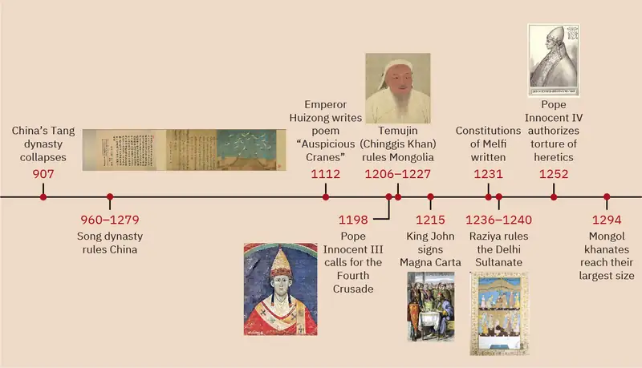
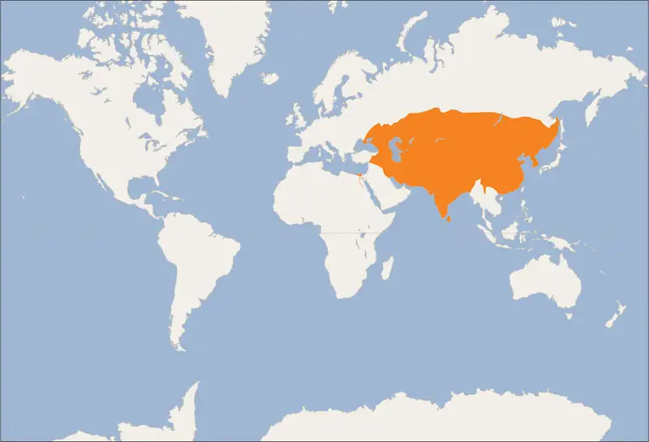
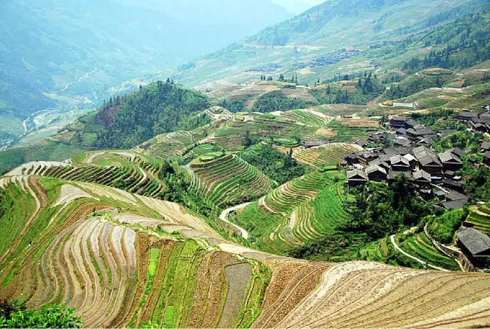

Chapter 14: Pax Mongolica: The Steppe Empire of the Mongols¶
Introduction¶
![An image painted on a lightly striped mustard yellow background is shown. Cracks run throughout the image. Five people are shown sitting on horses and a small, thin, brown dog is shown in the right foreground corner looking at the people. At the left, a figure on a light black horse looks up at the sky, aiming a bow and arrow up. He wears a light blue long robe over a red long sleeved shirt and red stockings. His shoes are red and a beige and brown decorated arrow sheath hangs at his left side as well as a light brown sword sheath. His hair is pulled into a tight ponytail at the top of his head and encased in a red cloth. In the middle, three figures sit on horses looking at the figure at the left. The first figure wears a long beige robe with brown and beige boots and a white cap with red projections on three sides and a red topper. He holds a white flag rolled up on a pole and holds the reins of the horse tightly. He has a white beard, thick cheeks, a black and blue sheath of arrows at his right side, and sits atop a brown horse with its teeth baring. The figure in the middle of this group wears a long, thick white coat with black wavy dashes all over and a thick black collar and black trim over a maroon highly decorated robe. He has a round face, tiny facial features that are barely visible, wears a red and white cap and sits atop a black horse with a decorated blue saddle. The third figure in this group has a very pale face, tiny black eyes and red lips, and black hair in pigtails under a brown flat hat. They wear a white robe and sit atop a brown horse with decorative blue reins and red heart tassels on their snout and hanging from the reins. A figure in the right corner is a large dark skinned person sitting atop a gray and white horse. The horse looks down while the figure holds on to the reins. He is dressed in a gold decorated red robe, green undershirt, red boots, and red and beige hat. His face shows thick cheeks, white eyes, and a large nose. He holds a whip in his right hand in the air.](img/osx-worldhist-a14-00-kkhanhunt.webp)
The years between 1000 and 1350 CE were a time of extreme highs and lows for the people living in the Eurasian land mass. China came close to industrializing and creating a Confucian meritocracy. An increasing percentage of Eurasia’s population converted to Islam, even as Christian military forces pushed Islamic civilization to the southern tip of Iberia and tried to wrest the eastern Mediterranean—the territory viewed by Jews, Christians, and Muslims as “the Holy Land”—from Muslim rule. Europeans grappled with creating governments strong enough to protect the population but with robust enough checks on centralized authority to keep at least the elites from being abused. Enslaved people revolted and began to rule in the Nile delta and Indian subcontinent.
Nowhere, however, was change more dramatic and consequential than among the scattered seminomadic people of the Inner Asian Steppe. One of their number, written off and enslaved as a child, emerged to unite and lead a large faction of them into such a potent force that his descendants, who included Kublai Khan (Figure 14.1), marched as conquerors through the palaces of the Chinese Son of Heaven, the Caliph of God’s messenger, and countless cities. This leader was known to the world as Chinggis (Genghis) Khan. Uniting a million or so of the world’s 400 million people into the Mongol Empire, he not only altered the trajectory of their lives, he also unleashed forces that swept many old ways aside and laid the foundations for the modern world to emerge.


14.1 Song China and the Steppe Peoples¶
Learning Objectives
By the end of this section, you will be able to:
- Describe the political and economic structures of Song China
- Describe the way of life of Song China’s northern neighbors
- Discuss Chinggis Khan’s role as unifier and empire builder
The disintegration of China’s Tang dynasty in 907 CE left a chaotic power vacuum in the territory it had ruled. Generals turned the jurisdictions they could control into small independent sovereign states. More traditional seminomadic peoples from the sparsely settled semiarid grasslands and mountains to the north of China’s borders, such as the Khitan Liao and the Xia, seized control of many former Tang domains. As they occupied these areas, some groups switched from migrating periodically for animal grazing and hunting, with the occasional raid on neighbors, to living a more agrarian life with urban centers and formal government, which would become hallmarks of Chinese civilization. The absence of central authority and legitimate succession led to frequent conflicts within and between these groups. Other seminomadic people located farther from China such as the Tatars and Mongols in the west and north, however, continued to live in loosely organized groups that were fluid in composition and unsettled in duration. They built no permanent structures and had only sporadic interaction with those to the south, occasionally exchanging or plundering goods.
Meanwhile, in the central and southern parts of what had been Tang China, the Zhao family convinced the fractured political units that they held the Mandate of Heaven—the favor of the natural order that sustained them but could be lost by those less worthy—thus beginning the Song dynasty in the 960s. The Khitan Liao and Xia, who ruled much of northern China, refused to recognize the Zhao patriarch as the Son of Heaven, the rightful Chinese ruler. Attempts to force such recognition failed, leaving the Song with a much smaller realm than the Han or Tang. Despite this, Song China was largely stable, with a steadily rising population and standard of living. In the 1120s, military reversals led to the loss of substantial territory and set back economic growth, but the Song were able to recover, only to be faced with the Mongol invasion in the 1230s.
Song China to the Thirteenth Century¶
While the Song dynasty ruled over less territory than other major dynasties, it experienced tremendous population and economic growth. Its emperors created a system closer to the ideals and virtues laid out by Confucius and his followers than any of their predecessors had, and for the most part, they lived and ruled by them. Those precepts had limitations, however, especially when it came to securing the territory against the increased power of the seminomadic steppe peoples, who were now adopting the technology and lifestyle of their more settled neighbors.
Securing the dynasty’s rule required replacing local military leaders with imperially appointed mandarins, civilian government officials who could advise and, when necessary, restrain the generals on matters of foreign policy. Mandarins were the key class in the social and political hierarchy during times of stability in the more than two thousand years of Confucian dominance in China, from the second century BCE to 1911 CE. Starting as allies of the early Han emperor who oversaw local landed gentry, mandarins were selected by a process that by the height of the Tang dynasty had evolved into a system of exams on Confucian texts. The Song made great progress bringing the Confucian ideal of government by scholar-officials to fruition by enacting reforms that made the exam process more merit based and less subject to nepotism or favoritism. While the system was interrupted by the Mongol Yuan dynasty, the Song reforms became the basis for the way Chinese government officials were selected until the fall of the monarchy in the early twentieth century.
Mandarins were the top officials in China, and having sons in this class was the primary method of gaining or maintaining social status. Women, even daughters of current officials, were not able to benefit. Although existing mandarin families had significant advantages in preparing their sons to succeed on the exams, it was not unheard of for a village to recognize talent in a peasant or artisan family’s child and support that child’s study. Not only would this step elevate that family into a higher social class, it would also give the village better access to government officials.
The Song dynasty’s founding brothers, Emperors Taizu and Taizong, had both served in the military, yet they structured a government in which the mandarins applied their Confucian pacifism to protect the state by bribing potentially hostile neighbors either not to attack them or to attack hostile neighbors for the Song. This policy stemmed from the belief that the Tang dynasty had fallen because it expanded into areas populated by non-Chinese peoples who refused to adopt orderly Confucian values. Pacifying those areas took unsustainable amounts of resources. The Song attitude toward the military was summed up in a saying from the era: “Do not waste good iron making nails; do not waste good men making soldiers.”
At the same time, Song engineers were the first to develop effective military uses for gunpowder, creating flamethrowers, handheld projectile-launching early guns, and shrapnel-laden bombs, hurled first by catapults and later by rockets. The Song had powerful military technology, but their predisposition toward Confucian pacifism and fear of a strong military that could endanger civilian rule prevented them from effectively using it much of the time.
While Tang dynasty China had emphasized increasing wealth through territorial expansion, the Song relied instead on internal economic development. Agriculture focused not on mere subsistence farming but on creating a food surplus that then supported a considerable expansion in population and, in turn, an increase in urbanization. At the same time, rural, farming households had increased purchasing power. Much of this was due to improvements in agricultural technology, which increased both the amount of available cultivatable land as well as crop yields. For example, irrigation made possible by the invention of chain-driven pumps turned unused hillsides into arable land (Figure 14.4). Peasants began planting new strains of rice that ripened quickly enough to yield two harvests per year. The Song government aided this economic development by stabilizing agricultural markets and food prices and taking advantage of new technologies that greatly increased the productivity of irrigation. It also maintained transportation and irrigation systems and spread the seeds of more efficient crops. In short, more land was open to farm, and the result was an increase in harvests and the availability of produce.

Link to Learning
Machinery to move water uphill was a key part of the irrigation technology that fueled the agricultural revolution in Song China. Read this brief text about the history of the chain pump and its connections to China to learn more.
The resulting increase in China’s food supply fueled a huge population boom, freeing labor to work in economic sectors outside agriculture. The first complete Song census showed around fifty-five million people in the early eleventh century. One hundred years later, there were around 120 million. At its height, Song China had at least three cities with populations of more than one million and dozens of cities with more than 100,000 people; in the same period in Europe, no city other than the Byzantine capital of Constantinople even approached these sizes after the fall of the western Roman Empire.
Some scholars contend that by the twelfth century, Song China was experiencing an industrial revolution similar to that of eighteenth-century Britain. Surplus labor from the population boom provided significant opportunities for the expansion of the production of industrial goods, and the dynasty saw iron production rise from around 65 million pounds around the year 1000 to more than 250 million pounds by 1100. This was almost double what would be produced in Britain even seven hundred years later. Large-scale factory production and water-powered textile and paper-making machinery were in use in some larger cities. These developments, along with the construction of better roads and canals, allowed the Song to become a more mobile and interconnected society. The increase in productivity meant that goods could be traded over greater distances, and there was more need (and opportunity) for merchants and other support workers to interact and move these goods, thus distributing the economic benefits that came with the use of machines.
Beyond the Book: Urban Society in the Song Period
One of the most famous depictions of urban daily life in Song China is a hand-painted scroll from the first decades of the twelfth century, attributed to Chinese painter Zhang Zeduan. The title of this scroll is generally translated as Along the River During the Qingming Festival, although some suggest that Qingming refers not to a specific festival but to a more generic time of peace and order.
The Qingming scroll illustrates the prosperity and economic development of the Song period by showing a variety of everyday social and economic activities undertaken by people of all classes in an unspecified Chinese city. Traditional interpretations suggest it is a realistic portrayal of daily life in Bianjing (modern Kaifeng), the Song capital from 960 to 1127. More modern critical analysis suggests instead that the scroll dates from a generation or more later and represents a yearning for a more idealized time in the past. For example, specific features of the capital have been omitted, and the images lack the signs of crime, poverty, and homelessness that are generally typical of large cities in any civilization.
It is not difficult to understand why well-known landmarks and characteristics of the capital are absent. While the scroll was likely intended to present a realistic visual depiction of the capital, those seeking to portray places of which they are proud often show them in their best light. Thus, the exclusion of the seedier sides of life makes sense; it is a truthful representation of aspects of Song society during this period, but one that does remain dishonest by omission, and a reminder to us as modern historians to carefully analyze and think about the sources from the past on which we rely for information.
Whether the scroll was intended to reflect what the artist chose to see in the city in which he lived or was an homage to an earlier and better time, it does show several aspects of daily urban life and Song dynasty technology. Watch the animated video to learn more.
- Contrast the types of businesses and modes of transportation depicted in the scroll with those in contemporary U.S. towns and cities.
- Does the omission of some aspects of Song society mean we should consider the scroll untrustworthy as a historical document for reconstructing the past? Why or why not?
The Inner Asian Steppe and Chinese Dynastic Struggles¶
Steppe peoples organized themselves under widely varying degrees of centralized authority. At one end were small self-governing nomadic clans with fluctuating membership and modest herds in remote parts of the steppe. At the other extreme were settled societies with fixed capital cities, centralized administrations funded by routine taxation, and a writing system for their language. In between were larger groups of seminomadic tribes that were mostly preliterate, with more loosely fixed memberships and territorial ranges than the settled societies. In the wake of the Tang dynasty collapse at the beginning of the tenth century, some seminomadic tribes seeking the prosperity and technology of China transitioned to more settled and centralized civilizations.
Taking advantage of the power vacuum caused by the collapse of the Tang dynasty, two steppe peoples extended their rule from the Inner Asian Steppe into northern China: the Khitan Liao, linguistically a Mongolian people who formed the Liao kingdom, and the Xia, sometimes called the Tangut, linguistically a Tibetan people who formed the Xi Xia kingdom. These kingdoms became a bridge between the long-established, highly centralized, and sedentary civilization of China and the nomadic tribes of the steppe (Figure 14.5).
![A map is shown with land highlighted beige and water highlighted blue. White lines run through the map, visible on the blue water and blue wavy lines run throughout the beige land. The Aral Sea is labelled on the land in the west. Land fills two-thirds of the image in the northwest and water is shown along the south and east. The Bay of Bengal, the Gulf of Thailand, the South China Sea, and the Sulu Sea are labelled along the south. The Taiwan Strait, the East China Sea, and the Yellow Sea are labelled in the east and the Sea of Japan (East Sea) is labelled in the northeast. West of the Sea of Japan and the Yellow Sea is a long oval area highlighted blue and labelled “Jin (Jurchen).” Going south there is a triangle shaped area highlighted orange with a black dashed line running down it, dividing it into a third at the west and two thirds at the east. The west is labelled “Song” while the east is labelled “Southern Song.” West of the southern half of the blue Jin area is a small oval highlighted green and labelled “Xixia (Western Xia).” A black dashed line starts in the northern part of the blue Jin area, heads northwest, then south and then straight west, coming back to the east and ending at the Yellow Sea. It is labelled “Liao (Khitan).” Areas labelled in the beige include: Mongols (north of the Liao area), Qara Khitai (in the west), Uyghurs (west of Xixia), Tufan (Tibetan) (west of Song), Dali (west of Southern Song), and Goryeo (a peninsula to the southeast of Jin (Jurchen)).](img/osx-worldhist-a14-01-m-asiasong.webp)
The eight tribes of the Khitan Liao spent the chaotic years between the Tang and the Song making a transition to life as a settled people with administrative institutions. Establishing a permanent capital city in the north in 918, their leader abandoned the traditional elections in favor of a hereditary monarchy. A dual system of administration was adopted, using traditional tribal practices of governance in areas populated predominantly by steppe people, while a system of exams similar to that used by the mandarins selected officials in the majority-Chinese parts of the kingdom. The processes of centralized administration required a written script, which was finalized in 920. The Liao dynasty also promoted economic development by moving Chinese workers skilled in technologies that steppe people did not practice, like metallurgy, to teach their crafts to those living in the steppe.
In 1004, the Song and the Liao agreed to the Treaty of Shanyuan. This pact highlighted the changing relationship between the steppe people and the Chinese between the Tang and the Song dynasties. In it, both the Song and the Liao emperors were referred to as Sons of Heaven. The two states were recognized as equals, each having the rights and obligations of border control and extradition, and neither allowed to alter the waterways that flowed between them. Tellingly, however, on the issue of tribute, the Song were obligated to give the Liao an annual payment of 200,000 bolts of silk and 130,000 ounces of silver (worth about USD$2.7 million in 2020 prices). No reciprocal obligation of the Liao to give tribute to the Song was specified.
The Song resented this relationship with the Liao, and in 1120 they bankrolled the revolt of one of Khitan Liao’s tributary states, the Jurchen, a steppe people who were themselves transitioning to more centralized, sedentary structures apart from their traditional tribal organization. Once the Liao and the Jurchen were locked in combat, the Song attacked from the south. Exploiting divisions within the Liao kingdom, the Song and the Jurchen were victorious by 1125. The remnants of the Liao royal family fled west with supporters and founded the Kara-Khitan state. The Jurchen assumed rule of the former Liao lands as the Jin dynasty.
The Jin were not content to supplant the Liao. The Song had already been paying them a modest tribute of luxury goods, and the Song need for help to defeat the Liao convinced the Jin that, while seemingly rich and prosperous, the Song were militarily weak. Their perception would certainly have been reinforced if they had been aware of the temperament of the Song emperor Huizong. In power since 1100, Emperor Huizong was more renowned as a Daoist poet and artist than an effective ruler. His most famous work, a poem and painting titled Auspicious Cranes, depicts the sighting of a flock of cranes, a traditional Chinese symbol of greatness and longevity and one of the links between humanity and the heavens in Daoism (Figure 14.6). Huizong interpreted the sighting as a sign his reign would be glorious and long. The Jin had other ideas, however, and attacked the Song in 1126. Huizong quickly abdicated in favor of his eldest son, Qinzong, who proved no more adept in military matters than his father. With Jin forces occupying large parts of Song territory north of the Yellow River valley and laying siege to the capital, Qinzong dispatched a peace mission, led by his half-brother Gaozong. The Jin took the mission hostage and extracted a hefty ransom and annual tribute to release its members and end the hostilities.
![An image of a painting on a long, thin rectangular yellow highlighted background is shown. At the left, Asian script is shown in black ink with several columns of writing. Two areas are stamped with red shapes. In the middle, more Asian script shows, but faded and in lighter black on a darker yellow background. At the right, an image is painted of eighteen white birds with black feet flying in a blue sky while two birds sit atop a structure in the middle of the image. The structure is wider at the bottom and thinner at the top, showing gray vertical lines inside, with a projection at each end where a bird sits. The ground is sandy colored and small rectangular gray structures with vertical lines sit in either corner of the forefront. A red and white square stamp sits in the right corner.](img/osx-worldhist-a14-01-acranes.webp)
The peace proved short-lived as Qinzong tried to entice the former Liao mandarins, who were now working in service to the Jin, to revolt. They reported Qinzong’s clumsy intrigues to the Jin emperor, who launched a more protracted attack. Bent on conquest and revenge this time, the Jin refused to be bought, and in 1127 they took the Song capital and seized the entire imperial household, goods, and people, including Huizong and Qinzong. In what became known as the Jingkang incident, the Jin went on a three-week rampage of raping and looting throughout the city.
Gaozong, who proved much more politically adept than his father or his brother, had been sent south to lead reinforcements back to the capital. Upon learning of the capital’s fall, Gaozong united the military and mandarins behind him, proclaimed himself emperor, and rallied Song forces to halt the Jin advance. This event is considered the beginning of the Southern Song dynasty. War continued to rage until the 1140s, when the two sides agreed to the Treaty of Shaoxing, in which Gaozong ceded all Song territory north of the Huai River to the Jin, acknowledged the Song’s tributary status to the Jin, and agreed to pay an annual tribute of 250,000 bolts of silk and 325,000 ounces of silver (more than USD$6.7 million today). Huizong died in captivity before the treaty was signed. Perhaps as a statement of contempt for his incompetence, Gaozong did not negotiate for his elder half-brother’s release, condemning him to live out his remaining twenty years as a Jin captive.
Within a dozen years of conquering the Liao Empire, the Jin began embracing the institutions and structures of the Song Confucian state. Landed aristocrats, generally descended from tribal chieftains, were replaced by mandarins selected by Confucian exams. The capital was relocated from the traditional Jurchen homeland in northeast Asia to Zhongdu, around contemporary Beijing. Confucian texts and Chinese literature were translated into Jurchen to speed the spread of Chinese culture and values, and the mandarin exams began to be given in Jurchen as well as proto-Chinese. Jurchen families were bribed (or forced) to relocate into former Liao and Song areas to mix with the Han population.
Meanwhile, despite the huge setbacks and defeats of the second quarter of the twelfth century, Gaozong and his immediate successors were able to unite and stabilize the Song dynasty. The long period of warfare allowed many ethnic Chinese to move south as refugees, where government assistance enabled them to find land or employment. By 1200, the Southern Song population was roughly the same size as it had been under the last census of the Song, despite encompassing much less land, and the economy seemed to have recovered to prewar levels.
The Rise of Chinggis Khan and Mongol Unification¶
While an increasing number of steppe people gathered in settled communities, many still lived as nomads. The clan, a small group of several families that shared an encampment and herded or hunted together, was the basic unit of steppe society. Each clan had a ruling lineage from which leaders were selected and that intermarried with other lineages to avoid in-breeding. Thus, the ruling lineages formed an aristocracy of sorts. Clans could split apart, creating a ruling lineage for a new clan, so it was possible to move from commoner to aristocrat, although founding and leading a clan was no small feat.
Given the high mortality among the steppe peoples, the adoption of children and widows was commonplace. Polygamy was practiced by men who could support multiple wives and the children they would produce, and most households included some enslaved people. Children, wives, enslaved people, and livestock were often obtained by raiding weaker, underprepared clans.
Clans joined together to form tribes under a single leader to better protect their herds and households, cooperate on resource management and migration, and engage in united actions like raids on other clans. Eurasian tribes were loosely organized, often multiethnic and multilingual, not exclusive to a kinship network, and open to any who were willing to obey the leader. Clans drifted in and out of tribes depending on their needs and wishes. Multiple tribes periodically united around a single skillful or charismatic leader, creating a larger confederation. This unity was very short-lived, rarely lasting beyond a generation or two.
Many clans and dozens of tribes occupied the Mongolian grasslands in the late twelfth century (Figure 14.7). Settled peoples like the Jin and Song had long incited these nomadic groups against one another, adding to the turmoil of incessant clan raids. In 1161, concerned that a confederation led by Mongolian speakers was growing too powerful, the Jin encouraged and supported a confederation led by Tatars to attack the Mongol-led confederation. Tatar was a Turkish language spoken by many inhabitants of the grasslands north of China. (The fluidity of membership in clans, tribes, and confederations makes it problematic to consider a group led by a speaker of one language as truly having a common ethnic heritage or long-standing communal bond such as a modern nation has. Nevertheless, perhaps for the sake of simplicity, scholars tend to refer to confederations of seminomads by the primary language of their leader.)
![A map is shown with land highlighted in beige and water in blue. The Angara R., the Onon R., and the Amur r. are labelled in the north and the Herlun R. is labelled in the middle of the map. The Huang He (Yellow R.) is labelled in the south. In the southwest of the map an area is highlighted dark pink and labelled “Kara-Khitan Dynasty.” In the middle south of the map an area is highlighted orange and labelled “Xia Dynasty.” In the north of this area is a label for “Dunhuang” and in the northeast a label for “Yinchuan” is shown. A large area in the east is highlighted green and labelled “Jun Dynasty” with a label for “Jurchen” in the west, and these in the south: Zhongdu (Beijing), Kaifeng, Nanjing, and Hangzhou. In the beige highlighted land, these areas are labelled, from west to east: Naiman, Kyrgyz, Oirat, Khori-Tumed, Kereit, Mongol, Merkit, Barga, Jadaran, Khiyad, Onggirat, Taichuud, Jalair, Ongut, Tartar and Saljiut.](img/osx-worldhist-a14-01-m-mongoltr.webp)
The Tatar attack on the Mongol confederation scattered its clans, forcing them to form new tribes and seek to join other confederations. It was in this context that a son was born to Hoelun, primary wife of one of the clan leaders of the recently defeated Mongol confederation in their camp between the Onon and Herlen Rivers. The child, born as Temujin, is better known today by the title he acquired later in life and that history most remembers him by: Chinggis Khan, meaning “universal ruler.” He completely altered the relationships between the nomadic groups on the Eurasian Steppe and radically changed the trajectory of world history.
There are no historical records of Temujin before he became known as Chinggis Khan, the powerful ruler of the world’s largest empire in his time. A work called The Secret History of the Mongols, likely written after his death, is the most potentially reliable source, though it is suspect because it is based solely on oral history interpreted by non-Mongols.
Whereas The Secret History of the Mongols recounts many heroic exploits in Temujin’s family’s struggle to survive, it paints a bleak picture of their existence on the steppe. Temujin was briefly enslaved by the rival clan until a sympathetic family helped him escape. Not long after Temujin married, raiders from the Merkit Mongol tribe attacked and kidnapped his wife, Borte. Temujin sought help from Ong Khan, leader of the Kereit Mongol confederation, to retrieve her, and she gave birth to a son not long after. The timing made it unclear who the father was; nevertheless, Temujin accepted the child as his. At some point in the early 1180s, Temujin broke with his friend and clan leader Jamukha and formed a new clan with himself as head.
In Their Own Words: Jamukha and Temujin Pledge Eternal Friendship and Loyalty
The Secret History of the Mongols is silent on how Temujin and his close friend Jamukha became blood brothers when Temujin and his family were roaming clanless on the Inner Asian Steppe. In the aftermath of the battle in which they fought together to free Temujin’s wife, Temujin joined Jamukha’s clan. The selection that follows is an account from The Secret History of the Mongols describing their pledges of unity and loyalty. As you read, think about how the two depict their relationship and what obligations they pledge to each other. Consider also how they symbolically confirm their new relationship, and how they celebrate it.
“This is how they declared themselves friends by oath for the second time. They said to each other, “Listening to the pronouncement of the old men of former ages which says: “Sworn friends—the two of them Share but a single life; They do not abandon one another: They are each a life’s safeguard for the other.” We learn that such is the rule by which sworn friends love each other. Now, renewing once more our oath of friendship, we shall love each other.” Temujin girdled his sworn friend Jamukha with the golden belt taken as loot from Toqto’a of the Merkit. He also gave sworn friend Jamuqa for a mount Toqto’a’s yellowish white mare with a black tail and mane, a mare that had not foaled for several years. Jamuqa girdled his sworn friend Temujin with the golden belt taken as loot from Dayir Usun of the U’as Merkit, and he gave Temujin for a mount the kid-white horse with a horn, also of Dayir Usun. At the Leafy Tree on the southern side of the Quldaqar Cliff in the Qorqonaq Valley they declared themselves sworn friends and loved each other; they enjoyed themselves revelling and feasting, and at night they slept together, the two of them alone under their blanket. —Igor de Rachewiltz, The Secret History of the Mongols: A Mongolian Epic Chronicle of the Thirteenth Century”
- What personal values and behaviors in the oath Temujin and Jamukha swear to each other are important to the Mongolian-speaking peoples?
- What do the gifts they exchange suggest Mongolian speakers greatly value?
By 1187, Temujin had such an impressive force and reputation that Ong Khan turned to him when the Jin induced Ong Khan to attack the Tatar Confederation. Ong Khan and Temujin defeated the Tatars and acquired goods more luxurious than Temujin’s people had ever seen. This drew even more people to his clan. As the clans allied with Temujin grew, Jamukha expanded his clan to keep up with him. Soon those in the Mongol-speaking part of the steppe were left with the choice of joining Temujin, joining Jamukha, or risking attack by one or the other.
Temujin made drastic changes to traditional Mongol practices, in part as a reaction to the hardships he suffered growing up, which laid the groundwork for his creation of a huge multiethnic empire. As he engaged in warfare with a wider array of rivals, he considered class differences. He punished those who led any resistance and executed the leaders of rival clans, but he often spared the common people and integrated the men into his army. He ordered his fighters to refrain from looting and raping and instead to pursue any fleeing warriors to capture or kill them, minimizing future retaliatory raids by those who escaped. Rather than enslaving the captured adult males, he put the members of aristocratic lineages on trial for committing whatever affront he had used to justify the attack. Once found guilty, which was the general outcome, they were executed. Temujin then divided the spoils of the raid equally between the participants and the households of his men killed in the raid. By assuring his soldiers that their widows and orphans would not be at the mercy of whoever took them in, he reduced the incentive to desert.
Temujin also divided his warriors into units of ten, each bound to the others by oaths of loyalty, and then units of one hundred and one thousand that chose their own leaders and swore similar oaths. Only at the highest level, ten units of one thousand warriors, did he appoint commanders, and he did so on the basis of merit and loyalty to him, not kinship or clan identity. The groups drilled precision moves and learned simple musical chants that identified the formations their commanders desired in the heat of battle. This innovative organization not only forged a deadly, efficient fighting force; it also provided all males with a shared and classless role in society and unified an increasingly ethnically and linguistically diverse portion of the steppe people, whom Temujin began to call the People of the Felt Walls in a reference to their fabric-covered homes.
Temujin’s reforms introduced a new division in steppe civilization that today might be called class warfare. People from aristocratic lineages began to fear Temujin and joined with Jamukha, but commoners sought the protection and rewards of joining the People of the Felt Walls. The aging Ong Khan disapproved of Temujin’s attack on tradition and aristocratic privilege and began favoring Jamukha. After Ong Khan tried to lure him into a trap, Temujin fled to a rendezvous with his top leaders, who swore renewed loyalty to each other in the Baljuna Covenant. The covenant became a rallying point and symbol of Mongol nationalism for future generations.
The men who swore to the covenant came from nine different clans and represented at least four religions: Buddhism, Christianity, Islam, and the traditional Mongol worship of Tengri, the Eternal Blue Sky. The glue that held the People of the Felt Walls together was not kinship, ethnicity, or religion but devotion to the civil society Temujin had created. Word went out from Baljuna to the scattering People of the Felt Walls to regroup and to find Temujin and the others in a remote part of the steppe.
Ong Khan believed Temujin was hiding out a weeks’ ride away in the east. Temujin and his followers were much closer, however. They surrounded Ong Khan’s forces, using the element of surprise to launch an attack that lasted three days. Demoralized, many of Ong Khan and Jamukha’s followers began to join Temujin. Ong Khan was killed while crossing alone into territory controlled by the Naiman, the last confederation that could oppose Temujin.
With Temujin expanding and the Naiman harboring Jamukha and other refugees from Ong Khan, war between the two groups was inevitable. Temujin’s discipline and tactical training of his troops paid off, and in 1204 the Naiman collapsed, its leadership dead or in flight. The survivors joined the People of the Felt Walls. Jamukha was eventually turned in by his followers and executed, along with those who had betrayed him, since Temujin felt their treachery to their lord deserved punishment.
14.2 Chinggis Khan and the Early Mongol Empire¶
Learning Objectives
By the end of this section, you will be able to:
- Describe the new civilization Chinggis Khan created for the Mongols
- Analyze the trajectory and motivations of the conquests made under Chinggis, Ogedei, and Mongke Khan
- Explain the actions Ogedei Khan took to bring about Chinggis Khan’s vision for a Eurasian trading empire
- Identify the obstacles the Mongols faced in their efforts to unify and expand their empire
With no remaining rivals to Temujin’s rule over the People of the Felt Walls, nothing stood in the way of his vision of a better world for his followers; Chinggis Khan, or “World Leader,” had truly been born. His vision was twofold. On one hand, Chinggis wanted to end the constant strife and warfare that characterized life on the steppe. Despite being a practitioner of violence and warfare, he also wanted to promote the peaceful acquisition of goods. He spent the rest of his life forcefully promoting those objectives, regardless of whether others desired them, with a bloody ruthlessness that seems at odds with those very same goals.
The Yassa and Mongol Life¶
To allow bitter feelings to subside after years of struggle, Chinggis waited until 1206 to call a kurultai to consolidate and confirm his rule over all Mongols. A kurultai was a meeting of those loyal to the leader of a seminomadic confederation, convened to confirm acceptance of a major change the leader wanted to make in relations within the group or between the group and others. Attendance signaled acceptance, and not attending meant not just disagreement but possibly withdrawal of loyalty to the leader. Temujin’s kurultai was unprecedented in its scale. The Secret History of the Mongols records that nearly all the million or so People of the Felt Walls attended, setting up encampments that spread for miles. Unlike almost all previous coronations in recorded history, Temujin’s was a highly inclusive event, not just for the elites and population of the capital. A shaman proclaimed him Chinggis Khan and confirmed that Tengri, a god revered by many central Asian peoples, granted him authority and would bless his people with prosperity and good fortune as long as he governed wisely and fairly, an idea similar to the Confucian Mandate of Heaven.
To prevent conflict over succession and maintain the democratic spirit of the kurultai where members had a say in selection, Chinggis Khan decreed that any future great khan, that is, any leader over the entirety of what he began to refer to as the “great Mongol nation” and the superior of all lesser khans, could be chosen only by a kurultai and not familial succession alone. Chinggis Khan now filled the role of clan and tribe leader. He put forth rules known as the yassa to govern relations between households; later, as the empire grew, he ordered the development of a written script for the Mongol language—based on that used by Uyghur tribes from areas north of China and Mongolia—so the yassa and records pertaining to it could be recorded (Figure 14.8).
![An image is shown in a yellow, double frame with décor in pale white. Two frames are shown – the one on the left shows an off-white background with three long rows of Asian script at the right with two shorter columns on either side. The left side of the image is blank. At the right, an image is shown on a gray speckled background. A man with a round face, brown eyes, thin eyebrows, and gray and white vertical lined beard wears a white cap draped behind his head to his shoulders and white robes. He has round earrings and bits of hair show from under his headdress.](img/osx-worldhist-a14-02-khanborte.webp)
The yassa made theft and robbery—the objectives of incessant raiding between clans—capital offenses. Enslaving Mongols was outlawed, as were adultery and kidnapping women and selling them for marriage. No one could kill more animals than their household could use, hunting was banned during animals’ mating seasons, and specified butchering methods ensured that maximum use was made of the animal. The yassa favored no religion and prohibited discrimination and favoritism on the basis of religion, perhaps the first law code to do so. Chinggis Khan, who continued to worship Tengri, granted tax and labor service exemptions to all religious leaders and holders of church lands, privileges later extended to those in secular occupations requiring literacy, such as medicine and law.
The family was the center of life for a Mongol woman, yet she had little if any say about how her family was formed. Marriages were arranged, and polygamy was common, although a man was not supposed to have more wives than he could support. Adult males in the household could sleep with any of the women in the household if this did not violate incest taboos, and it is unclear the degree to which a woman’s consent was necessary. Because the yassa defined adultery as occurring only between married people of different households, it codified the potential for sexual assault within households.
Mongol women did have some power, however. They were often left to oversee the household when the men went to herd, hunt, and raid. A widow beyond childbearing years was often considered a household head and took her husband’s place in the clan’s collective decision-making institutions. When Chinggis Khan was away on extended campaigns, his wife Borte was the de facto leader of the civilians of the Mongol Empire, and the wives and mothers of later Mongol rulers could hold significant power over a khanate following this model. Such instances of female leadership were far, far rarer—or entirely unheard of—in most other Afro-Eurasian societies of the same period.
The Conquest Movement of Chinggis Khan¶
The yassa and the social-military organization put in place by Chinggis Khan removed many sources of strife from the Mongol Empire. But they also prohibited traditional activities, such as raiding other clans, that had led to social mobility. Chinggis Khan believed that without new sources of wealth and glory, people might grow restless and reject the peace he tried to create. His life experience had given him no concept of settled economic development or ways to redirect his people’s energy to that goal. From the time he joined Ong Khan’s attack on the Tatars and saw the luxuries acquired from the Jin and the Song, Chinggis knew settled peoples were a source of wealth ripe for the Mongol Empire to take, and for him as their leader to distribute. In his eyes, conquering these peoples or intimidating them into giving tribute was the next logical step.
As word spread of Chinggis Khan’s coronation, some warriors in the settled kingdoms between the steppe and Song China left to join the Mongol Empire. The Kara-Khitan, assuming resistance would not go well, offered tribute to Chinggis Khan. After a coup in 1210, the new Xi Xia ruler accepted tributary status on terms similar to those of the Kara-Khitan.
The Jin, however, were another matter. In 1210, a new Jin emperor demanded Chinggis Khan submit to him and send tribute, so Chinggis marched his smaller but superior army south to invade (Figure 14.9). A master at exploiting his opponents’ weaknesses, he realized that his linguistic cousins, the Khitan, resented the rule of the Jurchen Jin dynasty, so he portrayed his army as a liberating force for them. With their army swelling with Jin defectors, the Mongols were able to lay siege to Zhongdu, the Jin capital, and eventually seize the starving city. Chinggis Khan ordered the city thoroughly looted, tens of thousands enslaved, and untold numbers of others massacred.
![A map is shown with land highlighted beige and water shown in blue. The Black Sea, the Sea of Marmara, the Dead Sea, and the Caspian Sea are labelled in the west while the Persian Gulf (Arabian gulf), Strait of Hormuz, Gulf of Aden, and Arabian Sea are labelled in the southwest. The Sea of Okhotsk is labelled in the northeast while the Sea of Japan (East Sea), Yellow Sea and East China Sea are labelled in the east. The Taiwan Strait is labelled in the southeast. In the middle east of the map, a dark green oval area is highlighted indicating “The Mongol Empire at the ascension of Genghis Khan, c. 1207.” Inside this area there are labels for these areas, from west to east: Naimans, Kyrgyz, Merkits, Karakorum (indicated with a black-bordered white dot), Keraits, and Tatars. Surrounding this dark green area and heading more east is a light green area indicating “The Mongol Empire at the death of Genghis Khan, c. 1227.” Inside this area at the west is a label for “Jin dynasty” and at the south for “Kara-Khitan Khanate.” In the east of this light green is an area labelled “Khwarazmian Empire.” This western area as well as land to the southwest is highlighted with black dots indicating “Khwarazmian Empire.” Black arrows fill the image. An arrow begins in the Khwarazmian Empire and heads west under the Caspian Sea and splits off into three – the first heading northwest to an area labelled Georgia south of the Black Sea. The second heads a short distance to the northeast, and a third arrow labelled with “1222” heads north. This arrow splits into two – one heading into the Black Sea just south of an area labelled “Kipchaks” and the other heading east under an area labelled “Russian Principalities” and into an area labelled “Volga Bulgaria” which is littered with black dots. The arrow in this section is labelled with “1223.” The arrow then heads southwest and then southeast to an area by the Aral Sea. An arrow begins just south of Karakorum and heads west toward the Khwarazmian Empire. It is labelled with “1211, 1218.” It splits into two – one arrow labelled “1221” heading northwest toward the Caspian Sea while the other arrow heads southwest and then southeast. It splits into two and a single very short arrow begins between them and heads southeast. An arrow begins east of the Kara-Khitan Khanate labelled “1225” and ends just east of Keraits. Six arrows begin between Karakorum and Tatars and all head south. Two are labelled “1207” and “1226-27” toward an area in the southwest labelled Xi Xia dynasty. Three with the labels “1209,” “1213,” and “1211, 1215” head southeast toward the Yellow Sea and an area in the south labelled “Southern Song dynasty.” The last one heads east toward an area labelled “Korea” with the label “1218.” An area in the south is labelled “Tibet.”](img/osx-worldhist-a14-02-m-conquest.webp)
Once the spoils from Zhongdu had been gathered, Chinggis Khan and his army headed back to the steppe, leaving the campaign against the Jin mostly in the hands of his Khitan allies. Forces loyal to Chinggis Khan continued to subdue the Yellow River basin and expanded north into the Jurchen homeland, even venturing to the Korean Peninsula. By 1223, these areas were pacified and providing tribute to the Mongol Empire and its allies who occupied them. Ironically, this vast amount of looted goods forced Chinggis Khan to build the first permanent structures on the steppe, a warehouse complex to hold war booty so it could be preserved and distributed or traded over time.
The Kara-Khitan kingdom caught Chinggis Khan’s attention in 1213 when the son of the Naiman leader he had defeated a decade earlier took control. The Kara-Khitan were already not meeting tribute expectations, and now a once-defeated rival led them. The Mongols quickly triumphed over the Kara-Khitan and absorbed them into the empire. Their conquests were wide, however, and not limited to China and the East. Mongol armies moved westward and likely seemed an unstoppable force to many.
The vast amount of wealth seized from the Jin fundamentally changed the mindset of the Mongol leadership, which demanded ever more goods, food, grazing lands, and raw materials. These new needs prompted Chinggis Khan to seek trading and raiding opportunities farther west. The absorption of the Kara-Khitan into the Mongol Empire had provided a direct border with the Islamic world through Khwarazmia, a realm stretching from Persia through central Asia. Around 1218, Chinggis Khan sent a caravan of a few hundred of his Muslim subjects to the leader of Khwarazmia, Allah al-Din Muhammad, with a letter requesting the establishment of trade relations and a great many valuable goods to show what he could offer.
Before the caravan reached the Khwarazmian ruler, however, his governor of Otrar confiscated the goods and killed the traders. In a grave miscalculation, Allah al-Din Muhammad then killed most of the emissaries Chinggis Khan sent to demand compensation, returning only a couple of them, disfigured. This did not just mean war to Chinggis Khan; it meant a war of revenge of the utmost brutality. This included the decimation of the cities of Herat, Merv, and Nishapur, which for centuries had been three of the most important and prominent cities of the eastern Islamic world. By 1223, Allah al-Din Muhammad had been killed while fleeing Mongol troops on an island in the Caspian Sea. Chinggis Khan divided the Khwarazmian state up to be administered by his sons and generals.
Link to the Past: World Trade
In the present day, the World Trade Organization (WTO) has seen countries from around the world join together with the support of the United Nations to develop and expand trade over long distances. Recognizing that the world is becoming increasingly globalized and that goods are moving across borders and between people more than ever before, the WTO has played a major role in streamlining, regulating, and supporting international commerce since its founding in 1995. But can we view the WTO as a contemporary version of Chinggis Khan’s vision for world trade?
Chinggis Khan’s messages to the ruler of Khwarazmia indicate that he genuinely sought trade, not tribute. In one he notes, “I have no need to covet other dominions. We have an equal interest in fostering trade between our subjects.” In a second letter, after the sultan had responded by sending a trade caravan, Chinggis Khan notes, “Merchants from your country have come among us . . . we have likewise dispatched to your country in their company a group of merchants in order that they may acquire the wondrous wares of those regions; and that henceforth the abscess of evil thoughts may be lanced by the improvement of relations and agreement between us, and the pus of sedition and rebellion removed.”
Both Chinggis Khan’s messages convey that trade promotes peace among countries and people. While the sultan did not see it that way, this idea is now the basis for many actions in international relations, where the concept of liberalism—which contends that the way to a peaceful world is to promote economic growth by barrier-free economic exchange between countries—holds great sway. While the WTO works through collaboration rather than by edict, the logic and intent are the same: allow goods to be exchanged throughout the world with a single set of rules, and people will live in harmony with one another.
- What benefits might Chinggis Khan have seen in supporting a free flow of trade between his empire and the Khwarazmians, even when they fought one another?
- Should we consider the formation of an organization like the WTO an innovation of the twentieth century or an outcome directly connected to the trade networks of the past? Why?
Reconnaissance for launching surprise attacks against Khwarazmia brought the Mongols into unfamiliar territory. To the south, they discovered India’s Delhi Sultanate in one of its rare periods of unity and growth. These Muslims were not part of the Khwarazmian realm, however, so attacking them would have been an unnecessary distraction. Seeking a route to surprise the Khwarazmians from the north, two of Chinggis’s most trusted generals, Jebe and Subutai, had crossed through the Georgian Kingdom, then the lands of the Rus, Slavic ancestors of modern Russians who had ruled the agricultural lands east of Hungary and Poland. They quickly annihilated the Khwarazmian and Rus forces, forcing both groups to become tributaries to Chinggis Khan.
Ogedei Khan’s Great Mongol Nation¶
Chinggis Khan spent his remaining years reasserting control over his Chinese conquests. The Jin, for example, regained tenuous sovereignty over the areas between Zhongdu and the coast. The Xi Xia refused to send troops to aid the war against the Khwarazmians, an act Chinggis saw as a betrayal. After defeating the Khwarazmians, he invaded the Xi Xia lands to punish them for this disloyalty. He was unable to enjoy the vengeance finally brought upon these uncooperative subjects, however, dying several months before the completion of his conquest, possibly as a result of being thrown from a horse.
As was Mongol custom, Chinggis Khan’s estate was to be divided between his four sons by his primary wife Borte. His estate was a huge chunk of the Eurasian continent with millions of people to rule and a great deal of annual tribute. To preserve this wealth and the harmony the yassa had created for at least the population of the Mongol Empire, Chinggis had insisted that one of his sons be the next great khan. This son was to not only run one-fourth of the empire directly but also command the military, serve as the final court of appeal, and control a central government consisting largely of postal stations for communication and warehouses for spoils and tribute.
Link to Learning
This web page has a simplified chart of Chinggis Khan’s male line of descent through his grandchildren, many of whom are referenced in this chapter. The site uses a different method of transliteration, so some names appear differently (for instance, Qubilai = Kublai and Cayatai = Chagatai). The German text reads “Mongol Grand Khans. The wife of Ogedei, Torgene, led the state from 1241 to 1246; Oyul Gaimis, the wife of Guyuk, was regent from 1248 to 1251.”
At a kurultai of his family and closest advisers years before Chinggis’ death, Ogedei was chosen to be this great khan. That decision was respected, demonstrating just how successful Chinggis had been in uniting the steppe peoples. The division of the empire between Chinggis Khan and Borte’s sons also occurred. Ogedei received the conquered lands of the Xi Xia and Jin. The heirs of the oldest of Chinggis Khan’s sons, Jochi, who had died a few months before his father, were given portions of the Mongol lands in central Asia, the territory of the Rus in modern Russia, and adjacent areas in northwest Eurasia. Led by Chinggis’s oldest grandson, Batu, they became known as the Golden Horde, horde being one of the most common terms used for the tribal organization of the Mongols. The youngest son, Tolui, was granted the Mongol homeland, and the rest went to the second son, Chagatai.
Ogedei’s coronation as khan reflected his reputation as a partier, with weeks of celebrations and feasting that involved virtually the entire nation and carefree depletion of the treasury by distributions of generous gifts to attendees. Tribute collections had fallen off, however, especially once word of Chinggis’s death spread. After Ogedei’s reckless spending, the Mongols were suddenly in financial trouble and unable to satisfy either the population’s growing expectations of living standards or their new leader’s ostentatious ambitions. Ogedei needed a way to quickly find more money.
To intimidate the tributary states, Ogedei attacked and defeated the Jin by 1234. The Jin civilization’s wealth flowed into the Mongol treasury, but it was not enough. More than pursuing a life of conquest, Ogedei wanted to siphon off wealth as tribute through control of Eurasia’s trade routes. To do that, he needed a capital, which he stored near Chinggis Khan’s warehouses in the Mongol heartlands; this was the origin of Karakorum as a city. Funding its construction required yet more tribute, however. In 1235, Ogedei called a kurultai to decide which lands should be conquered to provide it. After much debate, it was decided to attack both Europe and Song China.
The war against the Song was inconclusive. Both sides suffered heavy losses, and peace negotiations began in 1241. The Mongols fared better in the west. They reestablished control over areas they had subdued earlier, conquered Kyiv (Kiev) in 1240, and essentially wiped out most Christian armies east of the Holy Roman Empire, looting major cities such as Krakow and Buda in modern-day Poland and Hungary. As they entered Bohemia in early 1242, word came that Ogedei had died the previous December. To participate in the expected kurultai to replace him, the Mongols abruptly retreated before bringing full destruction to eastern Europe, though leaving devastation in their wake.
While Ogedei’s reign had mixed success, his extravagance and hedonism reflected the lifestyle the Mongol Empire adopted in the decades of unity brought by Chinggis Khan’s yassa. Ogedei instituted practices that allowed fairly effective extraction of resources and imposed stability and order in the lands he and his father had conquered. The details are generally credited to a Khitan mandarin named Yelu Chucai, whom Chinggis Khan first took notice of in 1215 and whom Ogedei tapped to expand the burgeoning system of taxation and recordkeeping for the whole empire. Yelu is credited with convincing Ogedei that “an empire can be conquered from horseback, but it cannot be ruled from horseback,” setting the stage for the bureaucratization of Mongol rule.
Ogedei embraced Yelu’s plans of systematic recurring taxation to replace tribute. He saw his empire as the center of world trade and expanded the infrastructure to support that. Primarily for military communication, Chinggis Khan had established a system of horse relay stations called yam on the long-distance roads throughout his realm. These yam were located at one-day intervals from one another and included rest areas and supply depots. Ogedei expanded the system, extending its use to merchants and diplomats and lavishly rewarding traders who brought items he had never encountered before. This hospitality and his spendthrift ways attracted many merchants.
In addition, Ogedei created the Pax Mongolica, or Mongol Peace, which united a large part of the world through the exchange of goods and the long-distance travel of people and ideas. This was accomplished through a twofold approach: it was facilitated by the peace and justice imposed by Mongols on those who accepted or embraced their rule and was funded by the taxation of all producing people. At the same time, it was assured by clear instances of unabashed brutality against any who would dare resist their spread into new lands. Many recognized that resistance was not worth the risk.
Ogedei had given no thought to succession, however, and almost a decade of infighting occurred after his death, calling forth a great effort to maintain what had already been conquered. A battle between Chinggis Khan’s grandsons Guyuk and Batu seemed imminent when the forty-two-year-old Guyuk mysteriously died.
Link to the Past: Chinggis Khan, Mongol National Identity, and the Hu
Although several clans and tribes of the Inner Asian Steppe spoke a common language, it was not until the reign of Chinggis Khan that they became a unified nation. From that point on, except for roughly three generations of Soviet rule in the twentieth century, during which symbols and figures with a strong local nationalist focus were often banned, Chinggis Khan has been inexorably linked to Mongol national identity.
A recent pop culture example is the breakout Mongolian heavy-metal band The Hu. Their 2019 debut album was called Gereg, after the medallions that granted merchants the use of the Mongols’ system of rest and supply areas on the roads. The Hu were the first Mongolian band to have a song lead the Billboard Top 100 list. In the fall of 2019, they finished a twenty-three-city European tour, and for their contributions in spreading Mongol culture globally, the Mongolian government gave them the country’s highest award, the Order of Chinggis Khan. Almost every song on their album harkens back to the days of the Mongol Empire of the thirteenth century.
The second verse of “The Great Chinggis Khaan” (simply an alternative spelling of “khan”) sums up both Chinggis Khan’s vision of the world and the way the Mongolian people view him. Here is the official music video of The Hu song “The Great Chinggis Khaan.” You may want to turn on the closed captioning to read the lyrics in English.
- Why might The Hu have chosen Chinggis Khan as a focus for their first album?
- What aspects of the status of Chinggis Khan in both contemporary Mongolian society and world history more generally do you think explain why this song proved so popular?
The Last Gasp of Mongol Expansion¶
It took until 1251 for majority support to coalesce around Chinggis Khan’s grandson Mongke. While Mongke successfully expanded Mongol domains, his reign would mark the end of continued conquest while also signaling the end of a united Mongol Empire.
Blending the best elements of Chinggis Khan and Ogedei, Mongke was poised to re-create the greatness of unified Mongol rule. He stabilized the empire, ordering a census to assess not just taxes but also the natural and human resources of his domains. To increase the empire’s wealth and dissipate potential restless energy that might be turned on him, he undertook multidirectional expansion. His brother Hulagu Khan was asked to subdue the Islamic world, while another brother, Kublai Khan, was sent to Song China.
Hulagu was enormously successful; like his grandfather in northern China, he exploited existing conflicts, which included resentment by the minority Shia Muslims against the Sunni caliph. Combining this strategy with the Mongols’ usual offer to spare from destruction those who would acknowledge Mongol rule and submit tribute without struggle, Hulagu was able to gain control of much of the caliph’s lands, especially Shia areas. By late 1257, his forces had surrounded Baghdad, and the city fell in early 1258, its physical defenses undermined. Tens, possibly hundreds, of thousands were massacred, and the caliph himself was killed.
Meanwhile, Kublai was also successful, conquering areas of Tibet and southwestern China. During the campaign, he began to favor Tibetan Buddhism, although not to the point of dismissing or persecuting other faiths. Mongke then moved him to administer the former Jin areas that were conquered by his grandfather, while Mongke himself, seeing the Song’s vulnerability, launched a broader attack against them in 1256. In 1259, as reports reached Mongke that Kublai was establishing a power base in northern China, he ordered Kublai to join him in the war against the Song, probably also wanting to keep close watch over him.
Before Kublai could reach him, however, Mongke died, likely from dysentery. His cousin Ariq Boke, another of Chinggis Khan’s grandsons and the one who had been left to administer the Mongol homeland, declared himself the new khan of the Mongol Empire ahead of a kurultai. Upon hearing this, Kublai, who was returning for the kurultai, also declared himself the new khan. While Kublai would prove a powerful and capable ruler, much had begun to change since the days of Chinggis, and the stage was set for the end of a unified Mongol Empire and a single khan who dominated the entirety of the territories they had conquered. Continued success in conquest had been a major factor in keeping rivals from unnecessarily challenging the rule of the chosen great khan or devolving his power. With this period of expansion over, these rivals were presented with new opportunities to claim more power for themselves, especially with the size and diversity of the empire the Mongols now ruled.
The last kurultai of the Mongol Empire failed and led to the permanent splitting of the realm. Hulagu stood with his brother Kublai. The Golden Horde, now led by Batu’s younger brother Berke, supported Ariq Boke. This left Orghina, sister-in-law to Hulagu and granddaughter of Chinggis Khan, in a position to choose which of her cousins would rule the Mongol Empire. Orghina, acting as regent for her son who was too young to assume a leadership role, chose neutrality, endorsing neither claimant. The fact that she was making this decision, not advising a man who would make the choice, shows the strides women had made under the yassa. Kublai ultimately prevailed, since his bonds with the army conquering China and his resource-rich power base in the northeast left him well situated to repulse Ariq Boke’s attacks. In 1264, Ariq Boke rode to Kublai’s capital and surrendered. He died under house arrest a couple of years later, probably having been poisoned.
Hulagu recognized Kublai as the great khan, calling himself il-khan (lesser khan) and his realm the Il-Khanate. He and his successors pursued their own policies independently, however, and Kublai’s hold on the Chagatai Khanate remained only as strong as the armies he devoted to enforcing it. The Golden Horde was well out of his reach. From this point on, the parts of the once-united Mongol Empire were administered separately and evolved differently (Figure 14.10). Historians refer to them as khanates—the Khanate of the Golden Horde, Il-Khanate, Chagatai Khanate, and the Khanate of the Great Khan—to distinguish them from the prior period of unity.
![A map of the world is shown, land highlighted in white and water in blue. In the northwest, the Mediterranean Sea, the Aegean Sea, the Black Sea, the Dardanelles, the Sea of Marmara, and the Bosporus are labelled. In the west, the Red Sea, the Dead Sea, the Persian Gulf (Arabian Gulf) the Gulf of Oman, and the Gulf of Aden are labelled. In the south, the Arabian Sea, the Laccadive Sea, the Indian Ocean, the Bay of Bengal, the Andaman Sea, the Gulf of Thailand, the South China Sea, the Sulu Sea, and the Celebes Sea are labelled. In the east, the Pacific Ocean, the Taiwan Strait, the East China Sea, the Yellow Sea and the Sea of Japan (East Sea) are labelled. In the northeast, the Sea of Okhotsk is labelled. The north area of the land is labelled “Russia” and the southeast is labelled “China.” An area from the Pacific Ocean in the east, north to Russia, south to the South China Sea and east to north of the Bay of Bengal is highlighted blue and labelled “Khanate of the Great Khan.” West of that is a small area highlighted dark pink and labelled “Chagatai Khanate.” Northwest of that is an area highlighted green labelled “Khanate of the Golden Horde.” South of this is an orange area that extends south to the Arabian Sea and west to the Black Sea labelled Il-Khanate.](img/osx-worldhist-a14-04-m-mongolhi.webp)
The struggle for power between Kublai and Ariq Boke also reflected a divide between Mongols willing to live as settled people and those who sought to preserve traditional nomadic ways. Kublai and Hulagu represented Mongols willing to adopt some aspects of settled life. Their successors, especially Kublai’s, embraced the settled lifestyle even more. Ariq Boke embodied the spirit of their traditional nomadic culture, the weaknesses of which had been under attack since Temujin had become Chinggis Khan and had sought to promote harmony and justice in ways traditional Mongol customs and practices did not. While Mongol armies were a formidable force in open battles on broad plains, it was only with the help of settled people and their technologies that they could take down the world’s richest cities and bring their riches to the Mongolian plain and, more importantly, create bureaucratic systems to keep it flowing and distribute it.
14.3 The Mongol Empire Fragments¶
Learning Objectives
By the end of this section, you will be able to:
- Analyze the extent to which Chinggis Khan’s vision for the future of Eurasia was realized by his grandsons
- Explain why Islam was successful in gaining converts in the Mongol Empire
- Analyze the degree to which YuanChina was a continuation of traditional Chinese civilization
While the ascension of Mongke Khan in 1251 gave hope for the realization of a Mongol Empire overseeing Eurasian trade, it proved only a temporary rebirth, since a lust for power consumed Chinggis Khan’s grandsons. The rulers of three of the four khanates—the Chagatai Khanate, the Khanate of the Golden Horde, and the Il-Khanate—eventually converted to Islam along with many of their people, but having a common religion did not keep them from fighting one another. By the mid-fourteenth century, two khanates had completely fragmented. Sporadic efforts were made to expand against the Delhi Sultanate but failed. Kublai conquered China and established the Yuan dynasty, also known as the Great Khanate of Yuan China, in the 1270s. However, in the fourteenth century, China too was dealing with serious internal divisions.
Islam and the Mongols¶
While the lands of the Eurasian Steppe were always a place of great religious heterogeneity, Islam was the faith of most of the people living there. Except in the Slavic areas of the Golden Horde, the lands west of the Volga River, the endorsement of the ruling Mongol elite added to the attractions of Islam, leading the majority of the population to convert. The other faiths were relegated to small, scattered communities (Figure 14.11).
![A map is shown, land highlighted in beige and water in blue. Wavy blue lines indicating rivers are shown throughout the map. In the northwest, the Black Sea, the Dardanelles, the Sea of Marmara, and the Bosporus are labelled. In the west, the Red Sea, the Dead Sea, the Persian Gulf (Arabian Gulf) the Gulf of Oman, and the Gulf of Aden are labelled. In the south, the Arabian Sea, the Laccadive Sea, and the Bay of Bengal are labelled. The Ural Mountains are labeled in the north and the Himalayas are labelled in the south, north of an area labelled the “Delhi Sultanate.” The Caucasus Mountains are labelled between the Caspian Sea and the Black Sea. A large area in the north of the map is highlighted yellow and labelled “Khanate of the Golden Horde.” In the northwest of this area, these cities are labelled: Kiev, Moscow, and Vladimir. Outside of this area in the north the city of Novgorod is labelled. A green highlighted area sits south of the orange area and to the east. The western side is labelled “Il-Khanate” and the eastern side is labelled “Chagatai Khanate.” In the west, these cities are labelled: Tabriz, Maragheh, and Baghdad. Southwest of the Black Sea an area is labelled “Seljuk Turks” and the city of Constantinople is labelled in the north of this area. The city of Jerusalem is labelled north of the Dead Sea.](img/osx-worldhist-a14-04-m-wmongol.webp)
By spreading throughout much of western and southern Asia over the centuries since its founding, Islam had often influenced—and been influenced by—local cultures. This exchange could lead to the formation of unique sects of the faith. One such set of beliefs was Sufism, a strain of Islam that emphasized asceticism and meditation as the path to a level of divine understanding that brought a rapturous feeling of love for God. Sufism played an important role in the Islamification of the Mongols and other peoples of the Inner Asian Steppe. While Sufis often sought to live lives of spiritual and moral perfection, their ultimate belief was that God was best worshipped through deep thought and reflection. Living a life strictly adhering to Quranic law was not an end in itself but a means to remove distractions so that the intense contemplation necessary to know God at the level they sought could occur.
Sufis were instructed in the movement’s practices by spiritual guides and often formed communities. The disruptions of the Mongol conquests caused many of these communities to scatter into the steppe, where they intermingled with people of the Mongol Empire, and where Sufi spiritual guides seemed similar to the shamans Mongols knew as the guardians of worship of Tengri. The Sufi emphasis on a mystical path of meditation and reflection also allowed Mongols to continue to live under the yassa and accept Sufi teachings and practices. As Muslims and Mongols interacted and formed families, Sufism made the conversion to Islam seem more of an evolution and less of a dramatic change.
The Fate of Hulagu’s Il-Khanate¶
Hulagu Khan had to balance several conflicts once civil war broke out after the death of Mongke Khan in 1259. The most serious threat was war with the Golden Horde, led by Batu’s younger brother Berke. A convert to Islam, Berke had become deeply disturbed by Hulagu’s destruction of Baghdad and the murder of the caliph. There were also disputes about whether Hulagu or the Horde should receive tribute from areas on which Hulagu had reimposed stability. Not surprisingly, Hulagu and Berke ended up on different sides of the civil war to succeed Mongke. Their conflict lasted nearly four years, until both men died in 1265, and their successors moved on to other pursuits.
For decades, the leaders of the Il-Khanate remained in frequent but intermittent conflict with the Golden Horde and the Mamluks of Egypt, who were sometimes joined by the Seljuks operating out of Anatolia and the Chagatai khans. Repulsing these attacks consumed most of the Il-Khanate’s efforts and resources, a situation compounded by periodic bouts of civil war over succession and making further expansion out of the question. The Il-Khans constantly struggled to hold the Tigris-Euphrates basin, leaving the Nile delta and lands holy to the Abrahamic religions in the Levant forever beyond their grasp.
Most of the population of the Il-Khanate had become Muslim centuries before. The need to concentrate on defense led the Il-Khans to leave most of the work of government in the hands of the religious scholars called the ulama, reinforcing traditional Islamic law and custom. Ghazan Khan, who ruled from 1295 to 1304, firmly favored Islam. His brother Oljaitu (who took the Muslim name Khodabandeh) promoted Shia Islam, further entrenching its presence in what is today eastern Iraq and Iran. Despite this, conflict with its Muslim neighbors continued as the Il-Khanate sought to take more resources for itself at their expense.
Overall, the economy was slow to recover from the devastation of Hulagu’s attack, especially with frequent warfare continuing to destroy the irrigation and urban infrastructure. There were chronic labor shortages in the first generations after Hulagu’s conquest because of wide-scale murder, enslavement, and relocation, as well as substantial emigration to neighboring Islamic lands. Ghazan’s reign laid the groundwork for a generation of prosperity and cultural flowering relative to the tumultuous periods before and after. This prosperity was centered east of Baghdad and the Tigris-Euphrates basin, around Maragha and Tabriz in modern Iran. The Il-Khanate rulers tried to live up to Chinggis and Ogedei Khan’s dream of a world united in trade by negotiating trade deals, most famously with Venice and Genoa on the Italian Peninsula. They were also able to maintain secure trade with Mongolian China. This prosperity, however, was not enough to overcome the peril of succession struggles. After the son of Ghazan died without an heir in 1335, the Il-Khanate fell into a civil war from which it never emerged. While several men claimed to be il-khan in subsequent years, none exercised control over more than a fraction of the lands Hulagu had conquered.
Dueling Voices: European Portraits of Chinggis Khan
Following are depictions of Chinggis Khan by two famous European writers. The first, from Geoffrey Chaucer’s Canterbury Tales, was written around 1400 as entertainment and likely reflected popular beliefs about the long-dead Mongol ruler. The second, from Montesquieu’s Spirit of the Laws, was written in 1748 as a work of social science aimed at Enlightenment intellectuals. Montesquieu’s disdain for absolute authority undoubtedly influenced his view of the great khan.
“This noble king was known as Cambinskan, [Chinggis Khan]
Who in his time was of so great renown
That there was nowhere in the wide world known
So excellent a lord in everything;
He lacked in naught belonging to a king.
As for the faith to which he had been born,
He kept its law to which he had been sworn;
And therewith he was hardy, rich, and wise,
And merciful and just in all men’s eyes,
True to his word, benign and honourable,
And in his heart like any center stable;
Young, fresh, and strong, in warfare ambitious
As any bachelor knight of all his house.
Of handsome person, he was fortunate,
And kept always so well his royal state
That there was nowhere such another man. —Geoffrey Chaucer, The Canterbury Tales”“The Tartars appear to be mild and humane among themselves; and yet they are most cruel conquerors: when they take cities they put the inhabitants to the sword, and imagine that they act humanely if they only sell the people, or distribute them among their soldiers. They have destroyed Asia, from India even to the Mediterranean; and all the country which forms the east of Persia they have rendered a desert . . . . These people having no towns, all their wars are carried on with eagerness and impetuosity. They fight whenever they hope to conquer; and when they have no such hope, they join the stronger army. With such customs, it is contrary to the law of nations that a city incapable of repelling their attack should stop their progress. They regard not cities as an association of inhabitants, but as places made to bid defiance to their power. —Montesquieu, The Spirit of the Laws”“Thus the Tartars under Jenghiz Khan [Chinggis Khan], among whom it was a sin and even a capital crime to put a knife in the fire, to lean against a whip, to strike a horse with his bridle, to break one bone with another, did not believe it to be any sin to break their word, to seize upon another man’s goods, to do an injury to a person, or to commit murder. —Montesquieu, The Spirit of the Laws”
- How are these two depictions different and similar? What might account for their differences?
- What do these excerpts suggest about how western Europeans saw the East—and the khanates in particular?
The Golden Horde¶
The areas the Golden Horde ruled, northwest Asia and the lands of the Rus, were less economically developed. People had a greater diversity of lifestyles and less centralized authority than imposed by the Il-Khans, and they were able to avoid splintering into civil war until outside factors intervened more than a generation after the Il-Khanate fell.
Batu and Berke, the foundational leaders of the Horde, established a capital for the storage of tribute as their grandfather had done, but they mainly roamed with their armies, raiding neighbors or defending against attacks. The people conquered by the Golden Horde varied from Turkish peoples like the Kipchaks, seminomads similar to the Mongols, to settled Slavic peasants in small urban centers. The Mongols ruled over the Turks indirectly, allowing local leaders to enforce the yassa, collect taxes, and conscript labor and soldiers. Mongol officials in the capital received and distributed tribute and heard appeals of local decisions. The Rus and other Slavic peoples were ruled more directly, with Mongol overseers assigned to each local ruler to make sure taxes flowed in and rebellion was kept down.
While Berke was the first Mongol ruler and khan of the Golden Horde to embrace Islam, not all his successors were Muslim. Islam continued to gain adherents among the Horde’s Mongols, however. In 1313, Uzbeg made Islam the official religion of the Golden Horde, but he did not remove the yassa’s tax exemption for other religions. Uzbeg’s promotion of Islam undoubtedly strengthened the Islamic community throughout the Golden Horde’s lands.
At the same time, the Horde’s rule strengthened the Orthodox Christian church in its Slavic regions. The church came to represent Rus national identity as people turned to Christianity to distinguish themselves from, and perhaps subversively resist, the Mongols. The tax and service exemptions the yassa gave religious institutions and those running them surpassed those the church received from Rus nobles. Church-owned land expanded under the Horde, whether because of donations to help the church provide increasing amounts of spiritual solace and identity, or because of fraud that enabled elites to live free of Mongol taxation and obligation by donating their land and then becoming the church officials in charge of the donation. By the collapse of Mongol rule in the late fifteenth century, the Russian Orthodox church’s holdings had grown to about one-third of the arable land in the areas formerly ruled by Rus nobles.
The Golden Horde both benefited from and contributed to the prosperity brought about by the Pax Mongolica. Direct European trade was under their control. Whether an import to the Mongol world in the east was produced by the Rus or brought from the continent by Italian merchants, it almost certainly entered through the Golden Horde, which had the first opportunity to buy it. The yam that facilitated the movement of goods throughout the empire was maintained for hundreds of years after Mongol rule had dissipated.
The troubled Chagatai Khanate lay in the middle of Mongol lands. Conflict with the other Mongol Khanates and Kublai’s Yuan dynasty was inevitable. At various times, separately or in combination with each other, the other Mongol states supported usurpers against the Chagatai Khans. While most had no long-term success, they kept the khanate in turmoil until it splintered into small states in the mid-fourteenth century. In addition to fighting other Mongols, some Chagatai Khans raided and on a couple of occasions tried to conquer the Delhi Sultanate. These efforts proved futile and weakened the regime, inviting more challenges and instability.
The most important long-term impact of the Chagatai Khanate was its solidification of Islam’s hold over western central Asia. Central Asia had always been a place of religious diversity, given that merchants of different faiths traversed its trade routes. It was a major factor in spreading Buddhism from India and Islam beyond the borders of the caliphate. Asian versions of Christianity, different from the Catholic and Orthodox traditions in Europe, thrived there as well. The last ruler to have governed the unified Chagatai Khanate, Tarmashirin, instituted policies that favored the displacement of other faiths by Islam and replaced the yassa with the more restrictive sharia, or Islamic religious law. While this change provoked resentment among the non-Muslim populations, Islamic law continued to be in force in lands given to the Chagatai after that khanate collapsed into small states that were in constant conflict.
Yuan China¶
In Yuan China, even as Kublai Khan was lining up forces against Ariq Boke, he demanded the Song emperor recognize him as the Son of Heaven in exchange for autonomy over the Han Chinese people. Not unexpectedly, the Song Son of Heaven declined to submit to vassalage under a man he considered a barbarian, and war broke out. Eventually, Kublai’s forces were victorious, prompting him to declare that the Mandate of Heaven had shifted to him, and the Yuan dynasty was proclaimed. As might be expected for the champion of Mongols adapting to a settled lifestyle, Kublai set up a capital city close to the old Jin capital of Zhongdu, both part of modern Beijing. China proved very difficult to govern, however; by the 1330s, the Yuan dynasty was in decline.
The Conquest of Song China¶
Although Kublai attempted to subdue the Song while fighting Ariq Boke, he did not begin serious efforts to conquer them until 1265. It took over a dozen years, but by 1279, the Song military was broken and its royal family dead or in hiding.
The Mongols, with allied peoples from north China and other parts of the steppe, dominated the Song on land. The Song military never developed good cavalry, perhaps hoping their fiery and explosive weapons would intimidate enemy horses and render their opponent’s cavalry useless. Retreating to the cities was not an option, because the Mongols were extremely adept at siege warfare. One area in which the Mongols were almost completely inexperienced, however, was naval warfare. The long and expansive river systems in southern China posed serious obstacles to the Mongols’ ability to completely conquer the Song.
Through the 1270s, the Song still tried to function as a working, mobile government, moving up and down river systems until finally pushed out to sea, whereupon they moved from port to port with a huge fleet of ships. A combination of the geography of the region, previous developments in hydraulic and irrigation technology, and Song seafaring skills allowed them to resist the arrival of the Mongols for many years. Tens of thousands of civilians loyal to the Song traveled with them. In a great irony of history, the increasingly settled Yuan Mongols had turned the Song into aquatic seminomads. The Mongols adapted to naval warfare by relying on loyal non-Mongol experts. They controlled the labor of skilled craftspeople who built warships and had sailors who could maneuver them.
In the year 1279, many Song loyalists, approximately 250,000 people in over a thousand ocean-capable boats, anchored off a remote bay near modern Yamen, China. There they began building a capital and prepared for a last stand, hoping that if they won, their victory would rally the Chinese to revolt against the Mongols. Mongol forces secured the land behind the Song ships, leaving them dependent on only the supplies they had on board. Within a few days, the Songs’ supply of fresh water ran out. Weakened by dehydration, they were no match for the Mongols. As a few ships fell to Mongol boarding parties, morale among the Song collapsed, and most of them committed suicide by jumping into the sea. China was united again for the first time in more than three hundred years, not by a Han Chinese Son of Heaven, but by the Mongol Kublai Khan.
Politics, Economy, and Society in Yuan China¶
Although retaining some Song policies such as the rotation of officeholders, the Yuan dynasty operated very differently from the way earlier Chinese dynasties had done. Kublai Khan’s most drastic change was to replace the Confucian system of class distinctions based on economic function with one based on ethnicity. At the top of the Yuan class structure were Mongols, followed by non-Chinese people, who were Europeans or previous steppe inhabitants like the Jurchen, Tangut, and Khitan. The bottom two classes were Chinese people: those of Han ethnicity who had been ruled by the Jin in the north, and the remaining Song Chinese who lived in the south. Mongols could not marry people from these bottom two classes. Everyone’s place in this new class system was noted in census records for each family, along with each head of household’s occupation, which was sometimes assigned if a shortage of certain types of labor occurred.
Adopting the Khitan idea of ruling different types of people differently, the Yuan dynasty had separate types of administration for its varied peoples. Even though an increasing number of Mongols were literate, including Kublai who was the first Mongol great khan to read, the mandarin written exam system fell into disuse. Mongols were subject to the yassa, as were the next two classes, who were ruled over by administrators appointed by the chief local Mongol administrator or the emperor himself. The Song Chinese, who were at the bottom of the four-class system, were governed by two administrators, one a Chinese person and one a Mongol or non-Chinese person. Both were imperial appointees. The Chinese administrator was under the supervision of and responsible to his counterpart. People in all these positions were rotated periodically, so they could not build up a power base.
Some non-Chinese administrators over the Song had not intended to work in the Yuan government. They came seeking some favor, often the right to trade, in exchange for which the emperors required them to perform administrative tasks. Literate Europeans came to know of the riches of Yuan China through one of these bureaucrats, Marco Polo, a young merchant, and member of a Venetian trade caravan who, along with several of his family members, ended up spending almost twenty-five years in Mongol lands and who wrote a popular account of the merchants’ experiences. While the Polos were the most famous of these hostage bureaucrats, serving for about twenty years, most were Muslim traders from other parts of the Mongol Empire. Regardless of how well they did their jobs, such bureaucrats were not likely to bond with the population and create a power base from which to challenge imperial authority.
Following Kublai’s death in 1294, his system’s flaws became apparent. In 1315, his great-grandson Buyantu reinstated the mandarin exam system, which now reflected the dual nature of the administration. Non-Chinese people took different (and shorter) exams than the Chinese people, and between 25 and 50 percent of those who passed had to be non-Chinese people. The effect of this quota was magnified because Song Chinese people made up more than 90 percent of the population, according to Yuan censuses. Between the differences in the exams and the quota system, it was much easier for Mongols and non-Chinese to pass than for Chinese.
Although travelers like Marco Polo, and to a lesser degree the North African Muslim traveler Ibn Battuta, wrote of the impressive wealth of Yuan China, economic growth had at best stagnated, thanks to a decline in consumer purchasing power caused by inflation and heavy taxation. The use of paper currency was a major contributor to inflation. While paper money was theoretically convertible to metal or silk, the Yuan government issued much more of it than it had metal or silk to redeem it with. Kublai decreed that currency must be used in transactions with the government, thus ensuring that paper money featured in at least some economic activity. This meant the population could not escape increasing inflation, however, as successive Yuan governments issued more paper currency to pay their bills and forced the population to obtain such money to pay their taxes. As more paper money entered the system without objects of value to back it up, ever more of it was required to purchase the same amount of goods and labor.
Link to Learning
Beyond official histories, we have descriptions of the Mongol Empire recorded by travelers through its domains, most famously Marco Polo and Ibn Battuta. This video contains a comparison of the men’s accounts of China and their impacts on their respective civilizations. Note the differences in the purposes of their travel, the content of their accounts, and their impacts.
The increasing taxes that partly resulted from inflation were pumped back into the economy through narrow and unproductive sectors, draining wealth from the rest of the economy. The Yuan spent lavishly on grandiose but failed military ventures that bankrupted the government. These were mainly Kublai’s projects. Kublai twice tried to conquer what is now Vietnam, and in even more costly ventures, he attempted complex sea invasions, two of Japan and one of Java. There were also periods of chaos and instability because of succession struggles. After Kublai’s appointed successor and grandson died in 1307, seven emperors reigned over the next twenty-six years. Resentment, especially among the Song population, seethed beneath the surface as government extraction of resources increased and inflation eroded the standard of living. As if all that was not challenge enough for the Yuan, in 1331 people outside the capital in the Hebei area began to sicken and die in large numbers. Within three years, 90 percent of that area’s population was dead from a strange new illness, later known as the Black Death. The Mongol Yuan government, like many of its people, did not survive long.
14.4 Christianity and Islam outside Central Asia¶
Learning Objectives
By the end of this section, you will be able to:
- Explain the evolving relationship between the Western Christian church and the rulers and people of Europe
- Identify the factors that led to the strengthening of Muslim control over the Middle East
- Discuss the limits of Mongol expansion and the states in North Africa and South Asia that remained independent
Largely oblivious to events in the Inner Asian Steppe, the thirteenth-century followers of the teachings of Jesus and Muhammed continued their struggle for control of the once-mighty Roman Empire in Europe and the Middle East. Islamic rule was slowly ending in the Iberian Peninsula (present-day Spain and Portugal), as new Christian kingdoms in the region rose and pushed the remaining Islamic states southward to a small strip around Granada. In the East, Christian forces continued their retreat before the successors of Salah al-Din (known in the west as “Saladin”), while Catholics of western Europe dealt near-fatal blows to those who considered themselves to be Rome’s true heirs in Byzantium.
The Christian Pope and the Papal States¶
Politically, thirteenth-century Europe was a series of confederations of warriors who had sworn oaths of vassalage, or loyalty, to one of the titular European kings. There were no real centralized governments, courts, or bureaucracies. The real power of kings rested on the resources they could draw from their own personal lands, and on the willingness of their vassals to provide them with the support they had pledged, which in turn depended on the willingness of lesser nobles who had sworn vassalage to them. The church was more unified, having a multinational bureaucracy ostensibly to meet the spiritual needs of the population, but also to extract society’s wealth for church leaders. This gave the church a direct and recurring relationship with the people that few lords had with the vassals on whom they relied for defense and order. Most people saw their parish priest much more often than their feudal lord.
In the 1230s, Pope Gregory IX created an Office of Papal Inquisition to centralize the persecution of heresy throughout Western Christendom. Thus began the Inquisition, a centuries-long effort to impose religious homogeneity on western Europe, through torture and execution, if necessary. In 1252, Pope Innocent IV authorized the use of torture on suspected heretics, who had to prove their innocence, confess, or face execution, sometimes by being burned at the stake. The fact that inquisitors could seize the lands and property of the condemned provided an unfortunate incentive to keep the persecution going.
Church-State Relations¶
Citing the precedent of Pope Leo III’s coronation of Charlemagne, the church argued that kings held their position because the pope granted it to them. The kings and their vassals did not see it that way. Some insisted they had the right to appoint and control church officials in their lands. While the church did not gain total control of the appointment and supervision of its officials, it obtained substantial protection against arbitrary monarchial rule and some leverage over kings in most countries.
The Hohenstaufen family ruled both the Holy Roman Empire and the Kingdom of the Two Sicilies, which encompassed much of the southern half of the Italian peninsula and the island of Sicily. Thus, the papal lands in Rome were surrounded by the Hohenstaufens, causing recurring conflict between the two. In 1241, the Hohenstaufens gained the upper hand when two popes died in quick succession while Hohenstaufen armies were laying siege to Rome. As a result, the papacy remained vacant for two years. A new pope incited revolt throughout the Holy Roman Empire, however, and the last Hohenstaufens succumbed to malaria in 1254. Their fall ushered in a long period known as the Great Interregnum, in which no Holy Roman emperor existed and Germanic nobles swore oaths of vassalage to rival kings. With such divisions in place, the papacy on occasion intervened—sometimes successfully, sometimes not—in political matters as well.
The church-state conflict played out differently in the Two Sicilies, where the monarchy established secular political control through the 1231 Constitutions of Melfi, considered the oldest surviving written constitution in the world. The Constitutions of Melfi increased the power of the monarch by replacing vassals and church officials with royal bureaucrats as local administrators and judges. The bureaucracy was funded by revenue from royal monopolies on essential products like salt, iron, and copper, along with tariffs and tolls. This revenue also allowed the king to build infrastructure, including fortifications in strategic parts of the kingdom staffed with soldiers paid from the royal coffers. The state created by the Constitutions of Melfi resisted church encroachment on its authority better than the Holy Roman Empire had.
Tension between the Rulers and the Ruled¶
A stronger central government also emerged in France over the thirteenth century. As in the Two Sicilies, this resulted from a restructuring of local government so that royal bureaucrats replaced vassals and church officials, and the monarchy had sufficient income to pay for their loyalty. Beginning with King Phillip II in the late twelfth century, French monarchs exploited opportunities to add to their royal holdings by taking land from their nobles. These new lands were managed by salaried royal appointees, not vassals who could pass their holdings to heirs. By the early fourteenth century, much of France was under direct royal control, greatly enhancing the resources French kings could call upon in conflicts with their vassals and the church.
By the reign of Phillip IV, which began in 1285, the French crown’s relationship with the church had drastically deteriorated. The crisis escalated until 1303, when Phillip sent soldiers to Rome to remove Pope Boniface. This act so intimidated church officials that when it came time to select Boniface’s successor in 1305, the cardinals picked a Frenchman allied with Phillip who then moved the papacy from Rome to Avignon, France, where it remained under the watchful eyes of French kings until 1376.
England developed differently than other European states. The monarch’s power over its vassals and the church was limited from the thirteenth century onward, and the basic rights of commoners, generally interpreted to mean adult males not bound as servants or apprentices, were protected. After King John was forced to become the pope’s vassal and pay him tribute, John’s vassals, emboldened by his capitulation, compelled him in 1215 to reaffirm those rights and expand them in Magna Carta, a document that reiterated existing rights and relationships of vassals. The document confirmed the papal position that the church was above the state and “shall have its rights undiminished, and its liberties unimpaired . . . by our heirs in perpetuity.” Among the rights spelled out in Magna Carta, perhaps the most important was that “no free man shall be seized or imprisoned, or stripped of his rights or possessions, or outlawed or exiled, or deprived of his standing in any way, nor will we proceed with force against him, or send others to do so, except by the lawful judgment of his equals.” This requirement created a precedent for trial by jury, which remains a staple of the judicial system in the West to the present day.
The other key development leading toward centralized government with limited and specified powers was the creation of a deliberative body of nobles, clergy, and commoners that replaced the Great Council of the king’s vassals and high clergy. This new body evolved into Parliament, designed to represent the interests of the people. Membership was expanded to representatives elected by the vassals of the king’s vassals, and starting in 1265, selected towns could send representatives to speak for the interests of merchants.
Parliament had two primary powers. One was to approve all tax increases. To establish uniform rule by the monarch, as opposed to a decentralized set of laws from the nobility and a potentially conflicting set from the church, Edward I asked Parliament to also approve laws. Parliamentary approval made the laws England’s laws, not just the king’s laws. Even if the king had drafted them, the nobles, clergy, and wealthy commoners had to agree to them. Edward I called his first Parliament in 1275, and the body met forty-six times during his thirty-five-year reign.
In the thirteenth century, the Iberian Peninsula was split between Christian kingdoms and parts of the Islamic Almohad Caliphate. The Christian kingdoms of Portugal, Leon, Navarre, Castile, and Aragon held about three-fifths of the land. Not only did these kingdoms fight each other and their Islamic rivals, but the same conflicts occurred between vassals and king and between monarch and church that existed in other Christian kingdoms. The church and vassals joined together to provide the king with revenue they deemed sufficient to keep the kingdom safe and orderly. Further resources had to be agreed upon by a council of vassals, clergy, and merchant representatives called the Cortes. As in England, the church and vassals were able to avoid being bypassed by kings and to assert checks on royal finances and power.
The Almohad Caliphate¶
Since the 1170s, Islamic Iberia had been ruled by the Almohad Caliphate, but they struggled to unify Muslims throughout the region and at times struggled to assert their authority. The Almohads were Imazighen (Berbers) from what is now southern Morocco. Leadership positions and economic advantage disproportionately went to members of the tribe from which the Almohad movement originated, often causing resentment. Support for the Almohads among other Muslims in North Africa and Iberia was broad but not especially strong.
Pope Innocent III arranged a truce among the Iberian Christian kingdoms in the early thirteenth century, convincing them to crusade to restore Christian rule to Iberia. In 1212, the Christian kingdoms devastated the Almohads at the Battle of Las Navas de Tolosa. Within a year, the Almohad caliph died without an heir, plunging the Muslim states in Iberia into a civil war from which they never recovered.
Link to Learning
This four-minute animation depicts the back-and-forth between Christian and Muslim control of Iberia, from the first Muslim invasion in the early eighth century to the final Christian conquest of Granada in 1492. This final success of the Christians in the peninsula is often called the Reconquista (reconquest), but historians have been moving away from that term because it privileges a Western Christian worldview on the period.
Squabbling among Iberia’s Christian kings caused their alliance to collapse. Nevertheless, over the next forty years or so, each kingdom expanded independently into what had been Almohad territory. By the late 1260s, only the area around Granada, about 5 percent of the peninsula, remained under Muslim control. Even there, however, the rulers swore vassalage to the secular kings of Castile.
Iberian Muslims now under Christian rule were generally not driven out and could work and practice Islam. The less fundamentalist Islamic law of pre-Almohad days was brought back for them, though church law called for discriminatory segregation in dealing with non-Christians. To ensure that minimal interaction occurred, for instance, Muslims were required to wear distinctive dress. They also had to pay taxes to the Christian church and observe Sabbath restrictions on Sundays, although they were not compelled to work on their own holy day of Friday. Muslims could work in Christian businesses but not in Christian households. Marriage between Christians and Muslims and Jews was forbidden, as was trying to convert Christians.
The Later Crusades and the Limits of Mongol Rule¶
Although Muslims lost ground to Christians in Iberia in the early thirteenth century, they were much more successful against them in their heartland. Despite incessant conflicts over which individuals should rule the Levant for Islam, Muslims rebuffed Christian attempts to reassert control of the Holy Land (modern Israel). Meanwhile, Catholic and Orthodox Christians killed each other in the struggle that mortally wounded Byzantium, known as the Fourth Crusade. By midcentury, several more crusades had been defeated, and Muslims seemed well positioned to expel Christians from the Levant and make gains against the dying Byzantine Empire.
After the Third Crusade, crusaders held only Tyre, Acre, and scattered fortifications in the interior of the Holy Land. Pope Innocent III, hoping to regain the Holy Land for western Christendom, and by virtue of that victory to convince the eastern churches to accept papal sovereignty, called for a Fourth Crusade soon after assuming the papacy in 1198. The plan was to attack the Muslims through Egypt to seize Jerusalem, as the last two (failed) crusades had attempted.
The Fourth Crusade never made it to Egypt, however, much less the holy lands of the eastern Mediterranean. The expense of transportation and supplies left the crusaders in debt to Venetian merchants, who insisted they settle the obligation by reconquering the city of Zadar (in modern Croatia, called “Zara” by the Venetians) for Venice. Pope Innocent was opposed to the idea. Not only was it a distraction from retaking the Holy Land, but Zadar was a Catholic city. Nevertheless, the crusaders agreed, taking the city in 1202.
While wintering in Zadar, the crusaders were offered the opportunity to make more money and recruit Byzantine soldiers for the crusade if they installed the son of a recently deposed Byzantine emperor on the throne in Constantinople. Perhaps to forestall Innocent’s objections, the Byzantines’ offer also included subordination of the Orthodox churches to Catholicism, a long-term goal of the western crusaders. Pope Innocent ordered the crusaders to go on to the Holy Land, but they accepted the Byzantines’ offer and made their way to Constantinople instead (Figure 14.12).
![A map of the world is shown, land highlighted in white and water in blue. The Mediterranean Sea is shown in the southwest, while the Adriatic Sea is labelled in the west and the Black Sea is labelled in the northeast. Asia is labelled in the northeast corner and Europe in labelled in the north. An area in the northwest is labelled “Holy Roman Empire.” A black arrow begins at the city of Venice, labelled at the north of the Adriatic Sea and heads south, stopping at the city of Zadar on the east coast of the Adriatic, then down to the city of Durazzo and south around islands at the northeast of the Mediterranean. The arrow then heads north to the city of Athens and then to the city of Constantinople located on the southwest end of the Black Sea. The city of Rome is labelled at the north of the Mediterranean Sea. An area south of the Black Sea in a backward “C” shape is highlighted purple and labelled “Seljuks of Rum.” A small green area inside this purple area is labelled “Ayyubid Sultanate.”](img/osx-worldhist-a14-03-m-foucrus.webp)
After a great deal of bungling and confusion on both sides, the crusaders were able to put their young patron on the throne of Byzantium as Alexius IV in the summer of 1203. It turned out, however, that Alexius could come up with only half the promised money, and his attempts to raise the remainder provoked a coup that ended in his death. As they awaited payment from the Byzantines, the crusaders found their expenses increasing, and getting to Egypt looked increasingly daunting. Defeating the heirs of Salah al-Din would be no easy task. The Byzantine army had already fled before them, and many crusaders had not seen their homes for almost three years. Clergy among them pointed out, however, that bringing a usurper (Salah al-Din) to justice was a holy cause that could fulfill their vows of fighting for causes aligned with Christian principles and God’s will, and one that would guarantee their entrance into heaven. However, restoring a legitimate ruler to the Byzantine Empire became the mission of the Fourth Crusade, accomplished in short order in the spring of 1204.
This new mission of the Fourth Crusade was radically different from that of the previous crusades, which had focused on expelling Muslim rulers from formerly Christian lands. The First Crusade, near the end of the eleventh century, had been the most successful, reestablishing Christian control over areas of Palestine and Syria and creating four Christian-ruled sovereign states in the Levant. After Muslims reclaimed much of the area, two more crusades occurred in the late twelfth century. Neither was able to reassert Christian dominance over Jerusalem or other key Christian sites. The Fourth Crusade had sought to complete the mission, but now it shifted to righting the supposed moral wrongs of Byzantium’s latest internal intrigues.
Once they had stripped Constantinople bare, the crusaders appointed a new Byzantine emperor and one of their own priests as Patriarch of Orthodox Christianity, thus putting the leadership of the Byzantine church in the hands of someone loyal to the papacy. Within a year, most of them had drifted back to their original homes, taking a share of Byzantium’s wealth with them. As they expected, Pope Innocent accepted the reimposition of Catholicism on Eastern Christianity as sufficient for fulfilling a crusader’s vows, even if not a single drop of Muslim blood had been shed or an inch of Islamic territory added to Christendom.
The Ayyubids and the Crusaders¶
The land the crusaders had intended to invade was ruled by the heirs of Salah al-Din and called the Ayyubid dynasty. Although Salah al-Din had directed that his empire be split among his brothers and sons upon his death in 1193, his brother al-Adil I had centralized it under his own control by around 1200. The actual power of any Ayyubid ruler rested on his ability to maintain the loyalty of mamluk armies; mamluks were soldiers, generally enslaved men taken from the peoples of the Eurasian Steppe as boys or adolescents. They had limited property and marriage rights and could move into high administrative and leadership posts if talented. They had no loyalties to the populations they policed and defended, and they were much less likely to rebel than members of communities that might become unhappy with the caliph’s rule. Their position and future completely depended on the continuation of their owner’s rule. Many caliphs thus preferred mamluk armies to civilian ones.
With Jerusalem still in Muslim hands after the Fourth Crusade, Pope Innocent called for a Fifth Crusade, dedicating church funds to avoid the financial issues that had lured the Fourth Crusade off course. Reusing the intended strategy of the Fourth Crusade, the Fifth Crusade departed for Egypt in 1217. Taking advantage of the turmoil caused by al-Adil I’s death in late 1218 and the ensuing rebellion against his son al-Kamil, the crusaders captured Damietta in 1219. With his lands in disarray, al-Kamil tried to bribe the crusaders to leave Egypt. He offered them all of what had been the former crusader state centered around Jerusalem and a thirty-year truce between Muslims and Christians in the Holy Land.
Confident they could defeat him, the crusaders rejected al-Kamil’s offer, a choice that proved unwise. By 1221, al-Kamil and his brothers had reasserted control over their father’s empire and joined together to trap the crusader army in the Nile delta. Faced with the threat of death by arms or by drowning, the crusaders agreed to withdraw from their conquests and return to Europe, ending the Fifth Crusade in yet another failure.
To placate the papacy, Hohenstaufen ruler Frederick II agreed to lead a new crusade, but personal misfortune and lack of enthusiasm among Europe’s vassals hindered his ability to get underway. The delays were so severe that the exasperated Pope Gregory IX excommunicated him, cutting him off from the church and its sacred rites. Even after Frederick set sail in 1228, Gregory condemned his venture as an unjust war, not a holy crusade.
Breaking with the strategy of the four previous crusades, Frederick landed in Acre, the main port still in Christian hands. His slow pace allowed word of his excommunication to precede him, causing him to be greeted with suspicion by his fellow Christians. Recognizing the power balance between Christians and the Ayyubids, Frederick fell back on his highly effective diplomatic skills to obtain the crusade’s objectives, concluding the Treaty of Jaffa with Sultan al-Kamil in 1219 (Figure 14.13).
![A faded and worn image is shown inside of red, thick edges. Five men stand on the left on a bright white background and sandy colored ground in front of an arched doorway on the right. The men stand in a row, two at the left facing to the right while the other three face to the left. The man on the far left wears green short armor, black stockings and shoes, wears a gray helmet and holds a yellow shield with an image of a black winged creature on the front. In front of him stands a man wearing a large yellowish crown, blue short robes with a gold trimmed red cape over his left shoulder, sporting a brown short beard and wearing a knife sheath on his belt. His right hand is extended and is touching the left hand of the man in front of him. This man has a brown longer beard, wears a similar yellowish crown, and wears a red cape over a red long shirt. His feet are blue and faded. The man behind him wears a white turban on his head, has no facial hair and wears a faded pink long shirtdress. He wears a curved sword sheath at his belt and holds a bow in his left hand. The last man wears a gray helmet with a large, curvy projection at the front. His neck is covered with green armor and he wears a red shirtdress. He holds a large club in his hand as well as a clover shaped yellow shield with an emblem of a creature in black on the front. He also has a curved sword at his belt. The black arched opening behind him leads to a brick wall at the right where a tall domed green building with windows shows from behind. Tall white windowed towers show on both sides of the green dome.](img/osx-worldhist-a14-03-kamilfred.webp)
The agreement allowed Frederick to be the titular king of Jerusalem, though with limited power. Muslims were under the rule of local Islamic scholars, not Christian officials; they could not be expelled or have their wealth confiscated, they could practice Islam, and the Islamic holy sites of the Al-Aqsa Mosque and Dome of the Rock remained under Muslim control. The treaty prohibited Jerusalem’s city walls, destroyed in the course of the crusades, from being rebuilt, leaving the city defenseless if Muslims attacked. A ten-year truce between Muslims and Christians was put in place.
The agreement was widely seen as a capitulation by both Muslims and Christians. Frederick’s decision to favor negotiation over battle sapped morale among the crusaders and furthered mistrust of him among the Holy Land’s Christians. Nevertheless, a Christian was king of Jerusalem, more Christians were under Christian rule than had been the case for at least two generations, and all had been accomplished without spilling a single drop of human blood.
By the time the truce expired, al-Kamil’s sons were fighting each other and ambitious generals for control. New crusaders arrived sporadically, augmenting Christian forces in the area. They tried to expand Christian territory by playing rival Ayyubid factions against each other, but it was all for naught. Al-Kamil’s son al-Salih stabilized his rule over the Ayyubid Empire, retook Jerusalem, and pushed the Christians back to a strip of coastal ports by 1244. He owed much of his success to bands of wandering Turks who had been displaced by Mongol expansion into central Asia and whom he incorporated into the Ayyubid mamluk army. While helpful for the moment, however, these additional soldiers entered the status of mamluk as independent adult refugees, not as adolescents with no life experience to compare mamluk service to.
While al-Salih consolidated his power, the French king Louis IX called for another crusade to liberate Jerusalem from Islamic rule, hoping to repeat the initial successes of the Fifth Crusade by taking Damietta in Egypt. He succeeded, but while Salih’s death in 1249 gave the crusaders hope, they met the same fate as their predecessors almost thirty years earlier. The Ayyubid mamluk army, led by al-Salih’s son Turan Shah, trapped the crusaders in the unfamiliar terrain of the Nile delta, capturing Louis and much of his army in 1250. Those deemed sick or unworthy of ransom were killed. Louis and the vassals with him were held hostage until Damietta was abandoned by the crusaders and a ransom of 6.4 million ounces of silver (more than USD$134 million at 2020 prices) was paid in advance, with the crusaders pledging to pay an equal amount later. This and the later crusades were often failures for a variety of reasons, which included unfamiliarity with the land and its peoples and more than a century of distrust that had continued to build between the crusaders and the indigenous eastern Christians.
The Rise of Egypt’s Mamluk Dynasty¶
Turan Shah did not live long enough to enjoy the fruits of his success. The wandering Turks turned mamluks who were the backbone of his army were convinced that the ransom money from the crusaders would be used to replace them with more traditional mamluks from Africa. To secure their position and gain control of the ransom money for themselves, they overthrew Turan Shah. His stepmother, al-Salih’s surviving widow Shajar al-Durr, briefly assumed the throne, but the mamluks were not willing to follow a female sultan, so they forced her to marry their leader Izz al-Din Aybak and abdicate in his favor. Historians consider the ascension of Aybak to be the end of the Ayyubid dynasty and the beginning of the Egyptian Mamluk dynasty. The Ayyubids left important marks on the history of the Islamic Levant. They restored the primacy of Sunni Islam after over two hundred years of Shia Fatimid rule. They built new madrasas—Muslim schools of learning, often with an emphasis on studying the Quran—in Aleppo, Cairo, and Damascus.
While Christians and Muslims were fighting each other, Hulagu Khan and his troops were ready to return to expanding Mongol domains. Satisfied with their looting of Baghdad and the security of their supply routes, they moved north to lands more hospitable to the enormous herds the army required. Hulagu decided the Mamluk areas of Syria and Egypt would be his next targets and demanded the Mamluk sultan become his vassal and pay tribute. The sultan declined. In 1259, after securing cooperation (or at least noninterference) from Islamic forces in Anatolia and crusader forces in the area, Hulagu attacked the Mamluks. Initially he had great success, taking Aleppo, which was annihilated as Baghdad had been, and Damascus, which surrendered unconditionally and was largely spared. Hulagu’s participation was short-lived, however. In early 1260, he received word that his presence was needed at a kurultai in Karakorum.
Hulagu appears to have underestimated Mamluk military prowess. Despite withdrawing possibly 90 percent of his forces as he returned to Karakorum, he still ordered Kitbuqa, one of his top generals and a Nestorian Christian, to take twenty thousand troops to conquer Egypt. Augmenting Kitbuqa’s forces were Christian Armenians and some of the remaining crusaders. In the fall of 1260, the Mamluks attacked the invading Mongols at Ain Jalut and soundly defeated them, killing Kitbuqa and most of his force. While the loss was relatively small compared with Hulagu’s overall force, it was enough to save parts of the unconquered Islamic world from further Mongol attack. Hulagu soon had his hands full defending his territory from his fellow Mongols, especially those of the Golden Horde. Meanwhile, the Mamluks were able to liberate Syria and Palestine from both the Mongols and the remaining crusaders and give some support to the Golden Horde in its conflicts with the Il-Khanate.
The Delhi Sultanate¶
There are many parallels between Mamluk Egypt and the Delhi Sultanate (in present-day India). The Delhi Sultanate had been created by the inhabitants of what is modern Afghanistan and was led by Muhammed of Ghur, who conquered the sultanate established by Mahmud of Ghazna in the late twelfth century. When the Mongols encountered it, the sultanate was ruled by a dynasty of former mamluks whose founder, Quṭb al-Din Aybak, had seized power after Muhammed’s death in 1206. Perhaps his efforts served as inspiration for the mamluk general Izz al-Din Aybak, who led the overthrow of Egypt’s Ayyubid dynasty almost fifty years later.
A feature the Delhi Sultanate shared with both its Mongol neighbors and the later Egyptian Mamluk dynasty was frequent bouts of civil war over succession. Aybak died from an injury after falling from a horse in 1210, leaving the task of stabilizing the sultanate to his son-in-law Iltutmish. Iltutmish did a remarkable job, asserting authority over other commanders of mamluk armies. After his death in 1236, however, decentralization and turmoil reigned for sixty years. During that time, there were ten sultans, only one of whom died from natural causes. The population suffered the disruption of economic activity and the destruction of crops, goods, and production centers during these multiyear struggles for leadership.
The conflict after the death of Iltutmish foreshadowed the turmoil of the Mamluk seizure of power from the Ayyubids and the role played in each case by a talented and forceful Muslim woman. Among the Mamluks this was al-Salih’s surviving widow, Shajar al-Durr. In the Delhi Sultanate, it was Raziya, Iltutmish’s daughter, whom he considered the most capable of his children to rule. A half-brother seized power with help from factions unwilling to accept a female sultan. Raziya, who had administered Delhi when her father was away on campaign, outmaneuvered her half-brother by directly appealing to the people of Delhi. When the army saw the public behind her, they deposed her decadent and incompetent brother.
Raziya ruled as sultana for four years and is remembered as a capable administrator, even leading successful military campaigns (Figure 14.14). Politically shrewd, she came to power despite the objections of nobles primarily because of popular support from her people. Breaking with Islamic convention, she dressed as a man, wore pants and no veil, and kept her hair short. This was too much for some Muslims in the sultanate. Another half-brother capitalized on their discontent and organized a rebellion of several military units, which drove Raziya into hiding. She was, however, cunning; she was eventually captured by one of the generals and married him; whether the marriage was a romantic alliance or a case of political opportunism is unknown. Ultimately, the couple was defeated and killed.
![An image of a painting is shown. The frame is thick white with gold leaves and flowers throughout. The top half of the image shows a blue background with an intricately detailed gold, blue, red and white domed tent top with thin poles holding it up. In the middle a woman sits on a richly decorated gold chair with her feet on a short gold stool atop a gold decorated dark floor. She wears a gold dress with blue, white, and red designs. She has long dark hair and a white face. She wears a tall golden headdress and a red pillow sits behind her back. In front of her on the left are two men in a pink and a green long shirt dress with thick yellow and pink belts with golden tassels at the ends. Both wear turbans on their heads. The one in front of her bows and hands her a white scroll while the man behind him has his hands folded together in front of his chest. A dark skinned man stands behind the seated woman with a black moustache, black long hair wearing a gold patterned headdress and a long gold robe with blue décor. He holds a white cloth in his left hand and a highly decorated fan in his right hand over the seated woman’s head. Behind him are two men in long brown and yellow shirt dresses with thick yellow and green striped belts with tassels at the ends. Both wear turbans and the first man holds a richly decorated fan over his shoulder while the man behind him rests his hands on a thin stick in front of him. Script is shown along the top of the image and each person has script by their faces. The bottom half of the image is shown on a backdrop of a gold wall with rich blue, black and white décor. The floor is brown with gold décor throughout. In the middle a man stands facing to the left in a pink long shirtdress with a gold turban and moustache. A shadow of a beard shows on his face and he holds a black round shield with gold décor at his left. At the left, in front of him, seven men stand facing to the right in long shirt dresses of yellow, light pink, green and blue with thick belts with tassels. They wear turbans in various colors and have beards and moustaches in black and white. Behind the figure in the middle are nine men in similar dress facing to the left. Scripted writing is shown on the clothing of a person at the left and one on the right. Below the image a white small wall is seen and a white tiled floor surrounds an area of blue with a small fountain in the middle spraying water. In the right corner of the image is a round seal has “Ministry of Culture • Government of India” written at the top perimeter and the inside shows a circle with an emblem and other script and below is stamped “Salai Jung Museum, Hyderabad.”](img/osx-worldhist-a14-04-raziya.webp)
To keep down rebellion and internal power struggles, the later Delhi sultans developed a series of authoritarian policies. For example, a secret police network was established to watch civilian administrators and military officials. Rules were so strict that these elites were banned from having celebratory gatherings with their peers, because sultans feared coups were planned at such events. Although already prohibited by the Quran, alcohol was officially outlawed, at least in the administrative area of Delhi. Peasants were largely spared in an effort to prevent rebellions, but other classes lost their financial independence and were placed under state control. Land that had been given to soldiers and war widows was confiscated, and bureaucrats’ salaries were kept low. Price controls limited merchants’ profit potential, and high taxes prevented the accumulation of large amounts of private capital. All these policies deprived subjects of wealth to fund rebellions and gave the sultan the ability to control people by cutting off their income.
Despite frequent internal turmoil, the Delhi Sultanate performed well against external foes and expanded greatly during the hundred years after Iltutmish’s rule. When he died in 1236, the sultanate controlled the area from the Himalayas through the Ganges River valley to the Narmada River at the northern edge of the Deccan Plateau. By the end of Muhammad Bin Tughlaq’s conquests in 1336, it held almost all the subcontinent’s land as well (Figure 14.15). This expansion not only enlarged the territory Muslims ruled from Delhi; it also facilitated the conversion to Islam of more of the Indian population. A per-person tax was imposed on Hindus, but it was graduated based on income. Those at the extremes of wealth and poverty, the Brahmans and the Pariah, respectively, were largely exempt. Furthermore, no sultan imposed sharia, which would likely have caused resentment. Those like the Pariah and Sudra, who felt caste discrimination, could easily find a home and increase their social standing by converting to Islam, and a good number chose to do so.
![A map is shown, land highlighted beige and water blue. In the northwest, the Mediterranean Sea, the Aegean Sea, the Black Sea, the Dardanelles, the Sea of Marmara, and the Bosporus are labelled. Just east of the Black Sea the Caspian Sea and the Aral Sea are labelled. In the west, the Red Sea, the Dead Sea, the Persian Gulf (Arabian Gulf) the Gulf of Oman, and the Gulf of Aden are labelled. In the south, the Arabian Sea, the Laccadive Sea, the Indian Ocean, the Bay of Bengal, the Andaman Sea, the Gulf of Thailand, the South China Sea, the Sulu Sea, and the Celebes Sea are labelled. In the east, the Pacific Ocean, the Taiwan Strait, the East China Sea, the Yellow Sea and the Sea of Japan (East Sea) are labelled. In the northeast, the Sea of Okhotsk is labelled. The north area of the land is labelled “Russia” and the southeast is labelled “China.” Southwest of China an area is highlighted orange indicating “Delhi Sultanate growth to 1336” and labelled “Delhi Sultanate.” The city of Delhi is labelled with a black dot in the north of this area. The north half of this area is also overlaid with blue dots indicating “Delhi Sultanate growth from 1236.”](img/osx-worldhist-a14-04-m-delhi.webp)
The Delhi Sultanate was also effective at repulsing Mongol attacks. While Chinggis Khan had bypassed it in his war against the Khwarazmians, both the Il-Khanate and the Chagatai Khanate, despite their own domestic turmoil and conflict with neighboring Mongol khanates, launched periodic raids against it for plunder. It was not until the 1290s that the Chagatai Khan Duwa made the first of several attempts not just to pillage but to conquer at least parts of the Delhi Sultanate. Duwa never led these efforts himself because he was engaged against the Yuan dynasty for most of this period. At least six attempts failed between 1296 and 1306, however, in no small part because Duwa had chosen to attack when the sultanate had one of its most capable rulers, Alauddin Khilji.
Tarmashirin made one last attack on the Delhi Sultanate for the Chagatai Khanate in 1327. Taking advantage of Sultan Tughlaq’s moving his capital and the bulk of his forces south to the center of his expanded empire, Tarmashirin, while struggling to assume the Chagatai Khanate throne, laid siege to Delhi. After extorting a great deal of tribute from Sultan Tughlaq, useful in raising an army to complete his own ascension to power back home, Tarmashirin withdrew his forces. Some scholars suggest his subsequent conversion to Islam was an attempt to minimize the possibility of a major retaliatory strike by the sultanate. Regardless, the fracturing of the Chagatai Khanate after Tarmashirin’s death ended any serious efforts by Mongols to conquer the Delhi Sultanate.
Chapter Review¶
Key Terms¶
- Constitutions of Melfi
- the oldest surviving written constitution in the world, which increased the power of the monarch of the Kingdom of the Two Sicilies by replacing vassals and church officials with royal bureaucrats
- Golden Horde
- the Mongol group that ruled over portions of central Asia, the former lands of the Rus, and northwest Asia
- Inquisition
- a centuries-long effort by the church to impose religious homogeneity on Western Europe through torture and execution, if necessary
- kurultai
- a proto-democratic gathering of a Mongol leader’s followers, called to reach agreement on major political decisions
- Magna Carta
- an English document that reiterated existing rights of vassals, confirmed the papal position that the church is above the state, and spelled out some basic rights of commoners
- mandarins
- top officials in the Imperial Chinese bureaucracy, selected by a series of exams on Confucian texts
- People of the Felt Walls
- Temujin’s name for his ethnically and linguistically diverse followers
- sharia
- Islamic religious law
- yam
- horse relay stations established by Chinggis Khan for long-distance communication on military campaigns; they were later expanded into rest areas and supply depots
- yassa
- Chinggis Khan’s law code, designed to eliminate the sources of conflict in steppe society and bring harmony to his people
Summary¶
14.1 Song China and the Steppe Peoples¶
The Song dynasty revived and strengthened Confucian civilization in the areas it ruled. Technology improved agricultural yields and laid the groundwork for a type of industrial revolution to occur long before the one that took place in the Western world. The emphasis on Confucius’s pacifist vision led to a neglect of the military, however, at a time when China’s neighbors were becoming more organized and powerful. The Khitan, Xia, and Jurchen all adopted elements of Chinese civilization but did not lose their appetite for raiding and war. Once the Jurchen Jin dynasty displaced the Liao, it realized the weaknesses of the Song and reduced it to an even smaller slice of China’s traditional territory.
Meanwhile, in Mongolia, Temujin used military innovations to gain control of increasing numbers of commoners at the eastern end of the Eurasian Steppe, building a force loyal and powerful enough to bring about his vision of a better life for his people. By 1204, Temujin was the unchallenged ruler of the People of the Felt Walls.
14.2 Chinggis Khan and the Early Mongol Empire¶
Chinggis Khan ruled the Mongol Empire for twenty-one years. In that time, he established a law code, the yassa, that he hoped would allow his seminomadic people to live in harmony. He saw the people living in settled areas, such as the Xi Xia, Jin, and Khwarazmians, as a source of wealth and tribute. The empire changed enormously during Chinggis Khan’s reign, becoming more inwardly peaceful but also much more materialistic in its tastes. The military changed as well, becoming a sophisticated war machine capable of surprise attacks and deadly sieges.
Chinggis Khan’s son Ogedei steered the empire toward his father’s vision of a united people, overseeing a peaceful Eurasia-wide exchange of goods and collection of taxes, and he expanded the empire to make it happen. Equally important, Ogedei undertook the development of the bureaucracy and infrastructure necessary to support trade on a large scale. Due to Ogedei’s lack of foresight in planning for succession, however, the reign of Chinggis Khan’s grandson Mongke marked the end of a united Mongol Empire. When Mongke’s brother Kublai succeeded him as great khan, the empire was beginning to divide into those who preferred the old nomadic ways and those who had adopted a settled lifestyle of wealth and trade.
14.3 The Mongol Empire Fragments¶
While Kublai’s Yuan dynasty reunited China and gave it the same ruler as the Mongol homeland and much of central Asia, it revived neither the prosperity of China nor the robustness of the steppe people. Trade continued to flow, and the effects of earlier economic growth were still apparent, but less wealth was subsequently produced. This meant less went to the steppe, and those producing wealth saw increasingly fewer returns on their labor. The seemingly invincible armies of the Mongol Empire had proven unable to conquer Southeast Asia and were even less skilled at long-distance sea invasions. Perhaps most contrary to Chinggis Khan’s desired legacy, his descendants succumbed to a lust for power and were quick to abandon the strength of a unified Mongol people under one leader for their own bid to be that leader for a few years.
14.4 Christianity and Islam outside Central Asia¶
The forces of centralization and conformity in Western Christendom scored important victories, crushing heretical movements and formalizing institutions such as the Inquisition to keep them down. On the other hand, crusaders and kings alike often ignored the papal will with virtual impunity. Monarchs in France and the Two Sicilies laid the groundwork for strong royal bureaucracies to keep the nobility in check. In other areas, nobles and merchants in places like England and Iberia created institutional arrangements to protect their rights and resources from royal abuse.
The Muslim-held portions of the Mediterranean saw frequent struggles over who would govern as institutions to ensure orderly succession failed to develop. Whoever had the military strength to impose law and order did so until they were displaced. Perhaps nothing demonstrated this pattern more than the rise of the Mamluk dynasty, founded by the mercenaries long used in struggles by different descendants of Salah al-Din. In North Africa, this failure of succession and changing military realities led to a collapse of centralized power and a yielding of land in Iberia to growing Christian states. In both areas, however, Sunni Islam emerged stronger than it had been at the beginning of the thirteenth century, although the strength of Muslim governance in the Iberian Peninsula was on a precipitous decline from which it would not recover.
Review Questions¶
14.1 Song China and the Steppe Peoples¶
1.
2.
3.
4.
14.2 Chinggis Khan and the Early Mongol Empire¶
5.
6.
7.
8.
14.3 The Mongol Empire Fragments¶
9.
10.
11.
14.4 Christianity and Islam outside Central Asia¶
12.
13.
14.
15.
16.
Check Your Understanding Questions¶
14.1 Song China and the Steppe Peoples¶
17.
18.
14.2 Chinggis Khan and the Early Mongol Empire¶
19.
20.
14.3 The Mongol Empire Fragments¶
21.
22.
14.4 Christianity and Islam outside Central Asia¶
23.
24.
25.
Application and Reflection Questions¶
14.1 Song China and the Steppe Peoples¶
26.
27.
14.2 Chinggis Khan and the Early Mongol Empire¶
28.
29.
14.3 The Mongol Empire Fragments¶
30.
31.
14.4 Christianity and Islam outside Central Asia¶
32.
33.
Adapted from World History, Volume 1, to 1500 by OpenStax, licensed under CC BY 4.0. Access the original for free at openstax.org. Changes: converted to the web reading format of The Open Book Project.